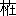

| 寿阿弥の手紙 | |
| 森 鴎外 | |
| (2012) | |
壽阿彌の手紙
森鷗外
わたくしは澀江抽齋
の事蹟を書いた時、抽齋の父定所
の友で、抽齋に劇神仙
の號を讓つた壽阿彌陀佛
の事に言ひ及んだ。そして壽阿彌が文章を善
くした證據として其
手紙を引用した。
壽阿彌
の手紙は苾堂
と云ふ人に宛
てたものであつた。わたくしは初め苾堂の何人たるかを知らぬので、二三の友人に問ひ合せたが明答を得なかつた。そこで苾堂は誰
かわからぬと書いた。
さうすると早速其人は駿河
の桑原苾堂であらうと云つて、友人賀古鶴所
さんの許
に報じてくれた人がある。それは二宮孤松
さんである。二宮氏は五山堂詩話の中の詩を記憶してゐたのである。
わたくしは書庫から五山堂詩話を出して見た。五山は其詩話の正篇に於
て、一たび苾堂を説いて詩二首を擧げ、再び説いて、又四首を擧げ、後補遺に於て、三たび説いて一首を擧げてゐる。詩の采録
を經たるもの通計七首である。そして最初にかう云ふ人物評が下してある。「公圭書法嫻雅
、兼善音律
、其人温厚謙恪
、一望而知爲君子
」と云ふのである。公圭は苾堂の字
である。
次で置鹽棠園
さんの手紙が來て、わたくしは苾堂の事を一層精
しく知ることが出來た。
桑原苾堂、名は正瑞
、字
は公圭
、通稱は古作
である。天明四年に生れ、天保八年六月十八日に歿した。桑原氏は駿河國
島田驛の素封家
で、徳川幕府時代には東海道十三驛の取締を命ぜられ、兼て引替御用を勤めてゐた。引替御用とは爲換方
を謂
ふのである。桑原氏が後に産を傾けたのは此引換のためださうである。
菊池五山は苾堂の詩と書と音律とを稱してゐる。苾堂は詩を以て梁川星巖
、柏木如亭
及五山と交つた。書は子昂
を宗
とし江戸の佐野東洲の教を受けたらしい。又畫
をも學んで、崋山
門下の福田半香、その他勾田臺嶺
、高久隆古
等と交つた。
苾堂の妻は置鹽蘆庵
の二女ためで、石川依平
の門に入つて和歌を學んだ。蘆庵は棠園さんの五世の祖である。
苾堂の子は長を霜崖
と云ふ。名は正旭
である。書を善
くした。次を桂叢
と云ふ。名は正望
である。畫を善くした。桂叢の墓誌銘は齋藤拙堂が撰
んだ。
桑原氏の今の主人は喜代平さんと稱して苾堂の玄孫に當つてゐる。戸籍は島田町にあつて、町の北半里許
の傳心寺に住んでゐる。傳心寺は桑原氏が獨力を以て建立
した禪寺で、寺祿
をも有してゐる。桑原氏累代
の菩提所
である。
以上の事實は棠園さんの手書中より抄出したものである。棠園さんは置鹽氏
、名は維裕
、字
は季餘
、通稱は藤四郎である。居る所を聽雲樓
と云ふ。川田甕江
の門人で、明治三十三年に靜岡縣周智
郡長から伊勢神宮の神官に轉じた。今は山田市岩淵町
に住んでゐる。わたくしの舊知内田魯庵
さんは棠園さんの妻の姪夫
ださうである。
わたくしは壽阿彌の手紙に由つて棠園さんと相識になつたのを喜んだ。
壽阿彌の手紙の宛名
桑原苾堂が何人かと云ふことを、二宮孤松さんに由つて略
知ることが出來、置鹽棠園さんに由つて委
く知ることが出來たので、わたくしは正誤文を新聞に出した。然
るに正誤文に偶
誤字があつた。市河三陽さんは此誤字を正してくれるためにわたくしに書を寄せた。
三陽さんは祖父米庵が苾堂と交はつてゐたので、苾堂の名を知つてゐた。米庵の西征日乘中
癸亥
十月十七日の條に、「十七日、到島田、訪桑原苾堂已宿」と記してある。癸亥は享和三年で、安永八年生れの米庵が二十五歳、天明四年生の苾堂が二十歳の時である。客も主人も壯年であつた。わたくしは主客の關係を詳
にせぬが、苾堂の詩を詩話中に收めた菊池五山が米庵の父寛齋の門人であつたことを思へば、米庵は苾堂がためには、啻
に己
より長ずること五歳なる友であつたのみではなく、頗
る貴
い賓客であつただらう。
三陽さんは別に其祖父米庵に就いてわたくしに教ふる所があつた。これはわたくしが澀江抽齋の死を記するに當つて、米庵に言ひ及ぼしたからである。抽齋と米庵とは共に安政五年の虎列拉
に侵された。抽齋は文化二年生の五十四歳、米庵は八十歳であつたのである。しかしわたくしは略
抽齋の病状を悉
してゐて、その虎列拉
たることを斷じたが、米庵を同病だらうと云つたのは、推測に過ぎなかつた。
わたくしの推測は幸
にして誤でなかつた。三陽さんの言ふ所に從へば、神惟徳
の米庵略傳に下
の如く云つてあるさうである。「震災後二年を隔てゝ夏秋の交に及び、先生時邪に犯され、發熱劇甚
にして、良醫交〻
來
り診
し苦心治療を加ふれど効驗なく、年八十にして七月十八日溘然
屬纊
の哀悼
を至す」と云ふのである。又當時虎列拉に死した人々の番附が發刊せられた。三陽さんは其二種を藏してゐるが、並
に皆米庵を載せてゐるさうである。
壽阿彌の苾堂に遣
つた手紙は、二三の友人がこれを公にせむことを勸めた。わたくしも此手紙の印刷に附する價値あるものたるを信ずる。なぜと云ふに、その記する所は開明史上にも文藝史上にも尊重すべき資料であつて、且讀んで興味あるべきものだからである。
手紙には考ふべき人物九人と苾堂の親戚
知人四五人との名が出てゐる。前者中儒者には山本北山がある。詩人には大窪
天民、菊池五山、石野雲嶺
がある。歌人には岸本弓弦
がある。畫家には喜多可庵がある。茶人には川上宗壽がある。醫師には分家名倉がある。俳優には四世坂東彦三郎がある。手紙を書いた壽阿彌と其親戚と、手紙を受けた苾堂と其親戚知人との外、此等
の人物の事蹟の上に多少の光明を投射する一篇の文章に、史料としての價値があると云ふことは、何人も否定することが出來ぬであらう。
わたくしは壽阿彌の手紙に註を加へて印刷に付することにしようかとも思つた。しかし文政頃の手紙の文は、縱
ひ興味のある事が巧に書いてあつても、今の人には讀み易くは無い。忍んでこれを讀むとしたところで、許多
の敬語や慣用語が邪魔になつてその煩はしきに堪へない。ましてやそれが手紙にめづらしい長文なのだから、わたくしは遠慮しなくてはならぬやうに思つて差し控へた。
そしてわたくしは全文を載せる代りに筋書を作つて出すことにした。以下が其筋書である。
手紙には最初に二字程下げて、長文と云ふことに就いてのことわりが言つてある。これだけは全文を此に寫し出す。「いつも餘り長い手紙にてかさばり候故
、當年は罫紙
に認候
。御免可被下候
。」わたくしは此ことわりを面白く思ふ。當年はと云つたのは、年が改まつてから始めて遣る手紙だからである。其年が文政十一年であることは、下
に明證がある。六十歳の壽阿彌が四十五歳の苾堂に書いて遣つたのである。
壽阿彌と苾堂との交
は餘程久しいものであつたらしいが、其詳
なることを知らない。只
此手紙の書かれた時より二年前に、壽阿彌が苾堂の家に泊つてゐたことがある。山内香雪が市河米庵に隨つて有馬の温泉に浴した紀行中、文政九年丙戌
二月三日の條に、「二日、藤枝に至り、荷溪
また雲嶺
を問ふ、到島田問苾堂、壽阿彌爲客
こゝにあり、掛川仕立屋投宿」と云つてある。歸途に米庵等は苾堂の家に宿したが、只「主島田苾堂」とのみ記してある。これは四月十八日の事である。紀行は市河三陽さんが抄出してくれた。
荷溪は五山堂詩話に出てゐる。「藤枝冡荷溪
。碧字風曉
。才調獨絶
。工畫能詩
。（中略）於詩意期上乘
。是以生平所作
。多不慊己意
。撕毀摧燒
。留者無幾
。」菊池五山は西駿
の知己二人として、荷溪と苾堂とを並記してゐる。
次に書中に見えてゐるのは、不音
のわび、時候の挨拶
、問安で、其末に「貧道無異に勤行仕候間
乍憚
御掛念被下間敷候
」とある。勤行と書いたのは剃髮後
だからである。當時の武鑑を閲
するに、連歌師の部に淺草日輪寺其阿
と云ふものが載せてあつて、壽阿彌は執筆日輪寺内
壽阿曇奝
と記してある。原來
時宗遊行派の阿彌號は相摸國高座郡
藤澤の清淨光寺から出すもので、江戸では淺草芝崎町日輪寺が其出張所になつてゐた。想ふに新石町
の菓子商で眞志屋五郎作と云つてゐた此人は、壽阿彌號を受けた後に、去つて日輪寺其阿の許
に寓
したのではあるまいか。
壽阿彌は單に剃髮したばかりでは無い。僧衣を著けて托鉢
にさへ出た。托鉢に出たのは某年正月十七日が始で、先づ二代目烏亭焉馬
の八丁堀の家の門
に立つたさうである。江戸町與力の倅
山崎賞次郎が焉馬
の名を襲いだのは、文政十一年だと云ふことで、月日は不詳である。わたくしが推察するに、焉馬は文政十一年の元日から襲名したので、其月十七日に壽阿彌は托鉢に出て、先づ焉馬を驚したのではあるまいか。若
しさうだとすると、苾堂に遣る此
遲馳
の年始状を書いたのは、始て托鉢に出た翌月であらう。此手紙は二月十九日の日附だからである。
壽阿彌が托鉢に出て、焉馬の門に立つた時の事は、假名垣魯文
が書いて、明治二十三年一月二十二日の歌舞伎新報に出した。わたくしの手許
には鈴木春浦
さんの寫してくれたものがある。
壽阿彌は焉馬の門に立つて、七代目團十郎の聲色で「厭離焉馬
、欣求淨土
、壽阿彌陀佛
々々々々々」と唱へた。
深川の銀馬と云ふ弟子が主人に、「怪しい坊主が來て焉馬がどうのかうのと云つてゐます」と告げた。
焉馬は棒を持つて玄關に出て、「なんだ」と叫んだ。
壽阿彌は數歩退いて笠
を取つた。
「先生惡い洒落
だ」と、焉馬は棒を投げた。「まあ、ちよつとお通下さい。」
「いや。けふは修行中の草鞋穿
だから御免蒙
る。焉馬あつたら又逢
はう。」云
ひ畢
つて壽阿彌は、岡崎町の地藏橋の方へ、錫杖
を衝
き鳴らして去つたと云ふのである。
魯文の記事には多少の文飾もあらうが、壽阿彌の剃髮、壽阿彌の勤行がどんなものであつたかは、大概此出來事によつて想見することが出來よう。寛政三年生で當時三十八歳の戲作者
焉馬が、壽阿彌のためには自分の贔屓
にして遣
る末輩であつたことは論を須
たない。
次に「大下の岳母樣」が亡くなつたと聞いたのに、弔書
を遣らなかつたわびが言つてある。改年後始めて遣る手紙にくやみを書いたのは、壽阿彌が物事に拘
らなかつた證に充
つべきであらう。
大下の岳母が何人かと云ふことは、棠園さんに問うて知ることが出來た。駿河國志太郡
島田驛で桑原氏の家は驛の西端、置鹽氏の家は驛の東方にあつた。土地の人は彼を大上
と云ひ、此を大下
と云つた。苾堂は大上の檀那
と呼ばれてゐた。苾堂の妻ためは大下の置鹽氏から來り嫁した。ための父即
ち苾堂の岳父は置鹽蘆庵
で、母即ち苾堂の岳母は蘆庵の妻すなである。
さて大下の岳母すなは文政十年九月十二日に沒した。壽阿彌は其年の冬のうちに弔書を寄すべきであるのに、翌文政十一年の春まで不音
に打ち過ぎた。其
詫言
を言つたのである。
次に「清右衞門樣先
はどうやらかうやら江戸に御辛抱の御樣子故御案じ被成間敷候
」云々
と云ふ一節がある。此清右衞門と云ふ人の事蹟は、棠園さんの手許でも猶
不明の廉
があるさうである。しかし大概はわかつてゐる。苾堂の同家に桑原清右衞門と云ふ人があつた。同家とのみで本末は明白でない。清右衞門は名を公綽
と云つた。江戸に往つて、仙石家に仕へ、用人になつた。當時の仙石家は但馬國出石郡
出石の城主仙石道之助久利
の世である。清右衞門は仙石家に仕へて、氏名を原逸
一と更
めた。頗
る氣節のある人で、和歌を善くし、又畫を作つた。畫の號は南田である。晩年には故郷に歸つて、明治の初年に七十餘歳で歿したさうである。文政十一年の二月は此清右衞門が奉公口に有り附いた當座であつたのではあるまいか。氣節のある人が志を得ないでゐたのに、昨今どうやらかうやら辛抱してゐると云ふやうに、壽阿彌の文は讀まれるのである。
次の一節は頗る長く、大窪天民と喜多可庵との直話
を骨子として、逐年物價が騰貴し、儒者畫家などの金を獲
ることも容易ならず、束脩
謝金の高くなることを言つたものである。
大窪天民は、「客歳
」と云つてあるから文政十年に、加賀から大阪へ旅稼
に出たと見える。天民の收入は、江戸に居つても「一日に一分や一分二朱」は取れるのである。それが加賀へ往つたが、所得は「中位」であつた。それから「どつと當るつもり」で大阪へ乘り込んだ。大阪では佐竹家藏屋敷
の役人等が周旋して大賈
の書を請ふものが多かつた。然るに天民は出羽國秋田郡久保田の城主佐竹右京大夫義厚
の抱への身分で、佐竹家藏屋敷の役人が「世話を燒いてゐる」ので、町人共が「金子の謝禮はなるまいとの間
ちがひ」をしたので、ここも所得は少かつた。此旅行は「都合日數二百日にて、百兩ばかり」にはなつた。「一日が二分ならし」である。これでは江戸にゐると大差はなく、「出かけただけが損」だと云つてある。
天民が加賀から歸る途中の事に就て、壽阿彌はかう云つてゐる。「加賀の歸り高堂の前をば通らねばならぬ處ながら、直通
りにて、其夜は雲嶺へ投宿のやうに申候、是は一杯飮む故なるべし。」天民の上戸
は世の知る所である。此文を見れば、雲嶺も亦酒を嗜
んだことがわかり、又苾堂が下戸であつたことがわかる。雲嶺は石野氏、名は世彜
、一に世夷
に作る、字
は希之
、別に天均又皆梅
と號した。亦
駿河の人で詩を善くした。皇朝分類名家絶句等に其作が載せてある。
皇朝分類名家絶句の事は、わたくしは初め萩野由之
さんに質
して知つた。これがわたくしの雲嶺の石野氏なることを知つた始である。後にわたくしは拙堂文集を讀んでふと「皆梅園記」を見出だした。齋藤拙堂はかう云つてゐる。「老人姓石氏
。本爲市井人
。住藤枝驛
。風流温藉
。以善詩聞於江湖上
。庚子歳余東征
。過憩驛亭相見
。間晤半日
。知其名不虚
。爾來毎門下生往來過驛
。輙囑訪老人
。得其近作以覽觀焉
。去年夏余復東征
。宿驛亭
。首問老人近状
。驛吏曰
。數年前辭市務
。老於孤山下村
。余即往訪之
。從驛中左折數武
。槐花滿地
。既覺非尋常行蹊
。竹籬茅屋間
。得門而入
。老人大喜
。迎飮於其舍
。園數畝
。經營位置甚工
。皆出老人之意匠
。有菅神廟林仙祠
。各奉祀其主
。有賜春館
。傍植東叡王府所賜之梅
。其他皆以梅爲名
。有小香國鶴避茶寮鶯逕戞玉泉等勝
。前對巖田洞雲二山
。風煙可愛
。使人徘徊賞之
。」庚子
は天保十一年で、拙堂は藤堂高猷
に扈隨
して津から江戸に赴
いたのであらう。記を作つたのは安政中の事かとおもはれる。
天民の年齡は、市河三陽さんの言
に從へば、明和四年生で天保八年に七十一歳を以て終つたことになるから、加賀大阪の旅は六十一歳の時であつた。素通りをせられた苾堂は四十四歳であつた。
喜多可庵の直話を壽阿彌が聞いて書いたのも、天民と五山との詩の添削料
の事である。これは首尾の整つた小品をなしてゐるから、全文を載せる。「畫人武清上州桐生
に遊候時
、桐生の何某
申候には、數年玉池
へ詩を直してもらひに遣
し候
へ共
、兎角
斧正
麤漏
にて、時として同字などある時もありてこまり申候、これよりは五山へ願可申候間
、先生御紹介可被下
と頼候時、武清申候には、隨分承知致候、歸府の上なり共、當地より文通にてなり共、五山へ可申込候
、しかしながら爰
に一つの譯合あり、謝物が薄ければ、疎漏
は五山も同じ事なるべし、矢張馴染
の天民へ氣を附て謝物をするがよささうな物と申てわらひ候由、武清はなしに御座候。」武清は可庵の名である。又笑翁とも號した。文晁
門で八丁堀に住んでゐた。安永五年生で安政三年に八十一歳で歿した人だから、此話を壽阿彌に書かれた時が五十三歳であつた。玉池は天民がお玉が池に住したからの稱である。菊池五山は壽阿彌と同じく明和六年生で、嘉永二年に八十一歳で歿したから、天民よりは二つの年下で、壽阿彌がこれを書いた時六十歳になつてゐた。
壽阿彌は天民の話と可庵の話とを書いて、さて束脩
の高くなつたことを言つてゐる。其文はかうである。「近年役者の給金のみならず、儒者の束脩までが高くなり、天民貧道など奚疑塾
に居候時分、百疋
持た弟子入
が參れば、よい入門と申候物が、此頃は天でも五山でも、二分
の弟子入はそれ程好いとは思はず、流行はあぢな物に御座候。」壽阿彌は天民と共に山本北山に從學した。奚疑塾は北山の家塾である。北山は寛延三年生で文化九年に六十一歳で歿したから、束脩百疋の時代は、恐らくはまだ二十に滿たぬ天民、壽阿彌が三十幾歳の北山に師事した天明の初年であらう。此手紙は北山歿後十六年に書かれたのである。天は天民の後略である。
次は壽阿彌が怪我をして名倉の治療を受けた記事になつてゐる。怪我をした時、場所、容體、名倉の診察、治療、名倉の許
で邂逅
した怪我人等が頗る細かに書いてある。
時は文政十年七月末で、壽阿彌は姪
の家の板の間から落ちた。そして兩腕を傷
めた。「骨は不碎候
へ共、兩腕共強く痛め候故」云々
と云つてある。
壽阿彌が怪我をした家は姪
の家ださうで、「愚姪方
」と云つてある。此姪は其名を詳
にせぬが、尋常の人では無かつたらしい。
壽阿彌の姪は茶技
には餘程精
しかつたと見える。同じ手紙の末にかう云つてある。「近況茶事御取出しの由
川上宗壽
、三島の鯉昇
などより傳聞仕候
、宗壽と申候者風流なる人にて、平家をも相應にかたり、貧道は連歌にてまじはり申候、此節江戸一の茶博士に御座候て、愚姪など敬伏仕り居候事に御座候。」これは苾堂が一たびさしおいた茶を又弄
ぶのを、宗壽、鯉昇等に聞いたと云つて、それから宗壽の人物評に入り、宗壽を江戸一の茶博士と稱へ、姪も敬服してゐると云つたのである。
川上宗壽は茶技の聞人
である。宗壽は宗什
に學び、宗什は不白に學んだ。安永六年に生れ、弘化元年に六十八歳で歿したから、此手紙の書かれた時は五十二歳である。壽阿彌は姪が敬服してゐると云ふを以て、此宗壽の重きをなさうとしてゐる。姪は餘程茶技に精
しかつたものとしなくてはならない。手紙に宗壽と並べて擧げてある三島の鯉昇は、その何人たるを知らない。
壽阿彌は兩腕の打撲
を名倉彌次兵衞に診察して貰つた。「はじめ參候節に、彌次兵衞申候は、生得
の下戸
と、戒行の堅固な處と、氣の強い處と、三つのかね合故
、目をまはさずにすみ申候、此三つの内が一つ闕候
ても目をまはす怪我にて、目をまはす程にては、療治も二百日餘り懸
り可申
、目をばまはさずとも百五六十日の日數を經ねば治しがたしと申候。」流行醫の口吻
、昔も今も殊
なることなく、實に其聲を聞くが如くである。
壽阿彌は文政十年七月の末に怪我をして、其時から日々名倉へ通つた。「極月
末までかゝり申候」と云つてあるから、五箇月間通つたのである。さて翌年二月十九日になつても、「今以而
全快と申には無御座候而
、少々麻痺
仕候氣味に御座候へ共、老體のこと故、元の通りには所詮
なるまいと、其
儘
に而
此節は療治もやめ申候」と云ふ轉歸である。
手紙には當時の名倉の流行が叙してある。「元大阪町名倉彌次兵衞
と申候而、此節高名の骨接
醫師、大
に流行にて、日々八十人九十人位づゝ怪我人參候故、早朝參候而も順繰に待居候間、終日かゝり申候。」流行醫の待合の光景も亦古今同趣である。次
で壽阿彌が名倉の家に於て邂逅
した人々の名が擧げてある。「岸本
園
、牛込の東更
なども怪我にて參候、大塚三太夫息八郎と申人も名倉にて邂逅
、其節御噂
も申出候。」やまぶきぞのの岸本由豆流
は寛政元年に生れ、弘化三年に五十八歳で歿したから、壽阿彌に名倉で逢つた文政十年には三十九歳である。通稱は佐々木信綱さんに問ふに、大隅
であつたさうであるが、此年の武鑑御弦師
の下
には、五十俵白銀
一丁目岸本能聲と云ふ人があるのみで、大隅の名は見えない。能聲と大隅とは同人か非か、知る人があつたら教へて貰ひたい。牛込の東更は艸體
の文字が不明であるから、讀み誤つたかも知れぬが、その何人たるを詳
にしない。大塚父子も未だ考へ得ない。
壽阿彌は怪我の話をして、其末には不沙汰
の詫言
を繰り返してゐる。「怪我旁
」で疎遠に過したと云ふのである。此詫言に又今一つの詫言が重ねてある。それは例年には品物を贈るに、今年は「から手紙」を遣ると云ふので、理由としては「御存知の丸燒後萬事不調」だと云ふことが言つてある。
壽阿彌の家の燒けたのは、いつの事か明かでない。又その燒けた家もどこの家だか明かでない。しかし試
に推測すればかうである。眞志屋
の菓子店は新石町にあつて、そこに壽阿彌の五郎作は住んでゐた。此家が文政九年七月九日に松田町から出て、南風でひろがつた火事に燒けた。これが手紙に所謂
丸燒である。さて其跡に建てた家に姪
を住まはせて菓子を賣らせ、壽阿彌は連歌仲間の淺草の日輪寺其阿が所に移つた。しかし折々は姪の店にも往つてとまつてゐた。怪我をしたのはさう云ふ時の事である。わたくしの推測は、單に此
の如
くに説くときは、餘りに空漠
であるが、下
にある文政十一年の火事の段と併
せ考ふるときは、稍
プロバビリテエが増して來るのである。
次に遊行上人
の事が書いてある。手紙を書いた文政十一年三月十日頃に、遊行上人は駿河國志太郡燒津
の普門寺に五日程、それから駿河本町の一華堂に七日程留錫
する筈
である。さて島田驛の人は定めて普門寺へ十念を受けに往くであらう。苾堂の親戚
が往く時雜遝
のために困
まぬやうに、手紙と切手とを送る。最初に往く親戚は手紙と切手とを持つて行くが好い。手紙は普門寺に宛てたもので、中には證牛と云ふ僧に世話を頼んである。證牛は壽阿彌の弟子である。切手は十念を受ける時、座敷に通す特待券である。二度目からは切手のみを持つて行つて好いと云ふのである。壽阿彌は時宗の遊行派に縁故があつたものと見えて、海録にも山崎美成が遊行上人の事を壽阿彌に問うて書き留めた文がある。
次に文政十一年二月五日の神田の火事が「本月五日」として叙してある。手紙を書く十四日前の火事である。單に二月十九日とのみ日附のしてある此手紙を、文政十一年のものと定めるには、此記事だけでも足るのである。火の起つたのは、武江年表に暮六時
としてあるが、此手紙には「夜五つ時分」としてある。火元は神田多町二丁目湯屋の二階である。これは二階と云ふだけが、手紙の方が年表より委
しい。年表には初め東風、後北風としてあるのに、手紙には「風もなき夜」としてある。恐くは微風であつたのだらう。
延燒の町名は年表と手紙とに互に出入がある。年表には「東風にて西神田町一圓に類燒し、又北風になりて、本銀町
、本町
、石町
、駿河町
、室町
の邊に至り、夜亥
の下刻
鎭
まる」と云つてある。手紙には「西神田はのこらず燒失、北は小川町へ燒け出で、南は本町一丁目片かは燒申候、（中略）町數七十丁餘、死亡の者六十三人と申候ことに御座候」と云つてある。
わたくしの前に云つた推測は、壽阿彌が姪の家と此火事との關係によつてプロバビリテエを増すのである。手紙に「愚姪方
は大道一筋の境にて東神田故、此
度
は免れ候へ共、向側は西神田故過半燒失仕り候」と云つてある。わたくしはこの姪の家を新石町だらうと推するのである。
文政十一年二月五日に多町二丁目から出た火事に、大道一筋を境にして東側にあつて類燒を免れた家は、新石町にあつたとするのが殆ど自然であらう。新石町は諸書に見えてゐる眞志屋の菓子店のあつた街である。そこから日輪寺方へ移る時、壽阿彌は菓子店を姪に讓つたのだらう、其時昔の我店が「愚姪方」になつたのだらうと云ふ推測は出て來るのである。
壽阿彌は若
し此火事に姪の家が燒けたら、自分は無宿になる筈であつたと云つてゐる。「難澁之段愁訴可仕
水府も、先達而
丸燒故難澁申出候處無之、無宿に成候筈」云々
と云つてゐる。これは此手紙の中の難句で、句讀
次第でどうにも讀み得られるが、わたくしは水府もの下で切つて、丸燒は前年七月の眞志屋の丸燒を斥
すものとしたい。既に一たび丸燒のために救助を仰いだ水戸家に、再び愁訴することは出來ぬと云ふ意味だとしたい。なぜと云ふに丸燒故の下で切ると、水府が丸燒になつたことになる。當時の水戸家は上屋敷が小石川門外、中屋敷が本郷追分、目白の二箇所、下屋敷が永代新田
、小梅村の二箇所で、此等は火事に逢つてゐないやうである。壽阿彌が水戸家の用達
商人であつたことは、諸書に載せてある通りである。
壽阿彌の手紙には、多町
の火事の條下に、一の奇聞が載せてある。此
に其全文を擧げる。「永富町
と申候處の銅物屋
大釜
の中にて、七人やけ死申候、（原註、親父
一人、息子
一人、十五歳に成候見せの者一人、丁穉
三人、抱への鳶
の者一人）外に十八歳に成候見せの者一人、丁穉一人、母一人、嫁一人、乳飮子一人、是等は助り申候、十八歳に成候者愚姪方
にて去暮迄
召仕候女の身寄之者、十五歳に成候者
愚姪方へ通ひづとめの者の宅の向ふの大工の伜
に御坐候、此銅物屋の親父夫婦貪慾
強情にて、七年以前見
せの手代一人土藏の三階にて腹切相果申候、此度は其恨なるべしと皆人申候、銅物屋の事故大釜二つ見せの前左右にあり、五箇年以前此邊出火之節、向ふ側計
燒失にて、道幅も格別廣き處故、今度ものがれ可申
、さ候はば外へ立のくにも及ぶまじと申候に、鳶の者もさ樣に心得、いか樣にやけて參候とも、此大釜二つに水御坐候故、大丈夫助り候由に受合申候、十八歳に成候男は土藏の戸前をうちしまひ、是迄
はたらき候へば、私方は多町一丁目にて、此所
よりは火元へも近く候間、宅へ參り働き度、是より御暇被下
れと申候て、自分親元へ働に歸り候故助り申候、此者の一處に居候間の事は演舌にて分り候へども、其跡は推量に御坐候へ共、とかく見
せ藏
、奧藏などに心のこり、父子共に立のき兼、鳶の者は受合旁故
彼是
仕候内に、火勢強く左右より燃かかり候故、そりや釜の中
よといふやうな事にて釜へ入候處、釜は沸上
り、烟
りは吹かけ、大釜故入るには鍔
を足懸りに入候へ共、出るには足がかりもなく、釜は熱く成旁
にて死に候事と相見え申候、母と嫁と小兒と丁穉一人つれ、貧道弟子杵屋
佐吉が裏に親類御坐候而夫
へ立退
候故助り申候、一つの釜へ父子と丁穉一人、一つの釜へ四人入候て相果申候、此事大評判にて、釜は檀那寺
へ納候へ共、見物夥敷
參候而不外聞の由にて、寺にては（自註、根津忠綱寺
一向宗）門を閉候由に御坐候、死の縁無量とは申ながら、餘り變なることに御坐候故、御覽も御面倒なるべくとは奉存
候へ共書付申候。」
此銅物屋
は屋號三文字屋であつたことが、大郷信齋の道聽途説
に由つて知られる。道聽途説は林若樹
さんの所藏の書である。
釜の話は此手紙の中で最も欣賞
すべき文章である。叙事は精緻
を極めて一の剩語
をだに著けない。實に據
つて文を行
る間に、『そりや釜の中よ』以下の如き空想の發動を見る。壽阿彌は一部の書をも著
さなかつた。しかしわたくしは壽阿彌がいかなる書をも著はすことを得る能文の人であつたことを信ずる。
次に笛
の彦七
と云ふものと、坂東彦三郎とのコンプリマンを取り次いでゐる。彦七はその何人なるを考へることが出來ない。しかし「祭禮の節は不相變御厚情蒙
り難有由時々申出候
」と云つてあるから、江戸から神樂
の笛を吹きに往く人であつたのではなからうか。
「坂東彦三郎も御噂申出
、兎角
駿河へ參りたい〳〵と計
申居候」の句は、人をして十三驛取締の勢力をしのばしむると同時に、苾堂の襟懷をも想
ひ遣
らせる。彦三郎は四世彦三郎であることは論を須
たない。寛政十二年に生れて、明治六年に七十四歳で歿した人だから、此手紙の書かれた時二十九歳になつてゐた。「去
夏狂言評好く拙作の所作事
勤候處、先づ勤めてのき候故、去顏見せには三座より抱へに參候仕合故
、まづ役者にはなりすまし申候。」彦三郎を推稱する語の中に、壽阿彌の高く自ら標置してゐるのが窺
はれて、頗る愛敬がある。
次に茶番流行の事が言つてある。これは「別に書付御覽に入候」と云つてあるが、別紙は佚亡
してしまつた。
「何かまだ申上度儀御座候やうながら、あまり長事
故、まづ是にて擱筆
、奉待後鴻候
頓首
。」此に二月十九日の日附があり、壽阿と署してある。宛
は苾堂先生座右としてある。
次に苾堂の親戚及同驛の知人に宛てたコンプリマンが書き添へてある。其中に「小右衞門殿へも宜しく」と特筆してあるから、試に棠園
さんに小右衞門の誰なるかを問うて見たが、これはわからなかつた。
壽阿彌は此等の人々に一々書を裁するに及ばぬ分疏
に、「府城、沼津、燒津等所々認
候故、自由ながら貴境は先生より御口達奉願候
」と云つてゐる。わたくしは筆不精ではないが、手紙不精で、親戚故舊に不沙汰ばかりしてゐるので、讀んで此
に到つた時壽阿彌のコルレスポンダンスの範圍に驚かされた。
壽阿彌の生涯は多く暗黒の中
にある。抽齋文庫には秀鶴册子
と劇神仙話とが各
二部あつて、そのどれかに抽齋が此人の事を手記して置いたさうである。青々園伊原さんの言
に、劇神仙話の一本は現に安田横阿彌
さんの藏弆
する所となつてゐるさうである。若し其本に壽阿彌が上に光明を投射する書入がありはせぬか。
抽齋文庫から出て世間に散らばつた書籍の中
、演劇に關するものは、意外に多く横阿彌さんの手に拾ひ集められてゐるらしい。珍書刊行會は曾
て抽齋の奧書のある喜三二が隨筆を印行したが、大正五年五月に至つて、又飛蝶
の劇界珍話と云ふものを收刻した。前者は無論横阿彌さんの所藏本に據つたものであらう。後者に署してある名の飛蝶は、抽齋の次男優善
後の優
が寄席
に出た頃看板に書かせた藝名である。劇界珍話は優善の未定稿が澀江氏から安田氏の手にわたつてゐて、それを刊行會が謄寫したものではなからうか。
壽阿彌の生涯は多く暗黒の中にある。寫本刊本の文獻に就てこれを求むるに、得る所が甚だ少い。然るにわたくしは幸に一人の活きた典據を知つてゐる。それは伊澤蘭軒
の嗣子榛軒
の女
で、棠軒の妻であつた曾能子刀自
である。刀自は天保六年に生れて大正五年に八十二歳の高齡を保つてゐて、耳も猶
聰
く、言舌も猶さわやかである。そして壽阿彌の晩年の事を實驗して記憶してゐる。
刀自の生れた天保六年には、壽阿彌は六十七歳であつた。即ち此手紙が書かれてから七年の後に、刀自は生れたのである。刀自が四五歳の頃は壽阿彌が七十か七十一の頃で、それから刀自が十四歳の時に壽阿彌が八十で歿するまで、此畸人
の言行は少女の目に映じてゐたのである。
刀自の最も古い記憶として遺つてゐるのは壽阿彌の七十七の賀で、刀自が十一歳になつた弘化二年の出來事である。此賀は刀自の父榛軒が主として世話を燒いて擧行したもので、歌を書いた袱紗
が知友の間に配られた。
次に壽阿彌の奇行が穉
かつた刀自に驚異の念を作
さしめたことがある。それは壽阿彌が道に溺
する毎に手水
を使ふ料にと云つて、常に一升徳利に水を入れて携へてゐた事である。
わたくしは前に壽阿彌の托鉢
の事を書いた。そこには一たび假名垣魯文
のタンペラマンを經由して寫された壽阿彌の滑稽
の一面のみが現れてゐた。劇通で芝居の所作事
をしくんだ壽阿彌に斯
の如き滑稽のあつたことは怪むことを須
ゐない。
しかし壽阿彌の生活の全體、特にその僧侶
としての生活が、啻
に滑稽のみでなかつたことは、活きた典據に由つて證せられる。少時の刀自の目に映じた壽阿彌は眞面目
の僧侶である。眞面目の學者である。只
此僧侶學者は往々人に異なる行を敢
てしたのである。
壽阿彌は刀自の穉
かつた時、伊澤の家へ度々來た。僧侶としては毎月十七日に闕
かさずに來た。これは此手紙の書かれた翌年、文政十二年三月十七日に歿した蘭軒の忌日
である。此日には刀自の父榛軒が壽阿彌に讀經
を請ひ、それが畢
つてから饗應して還
す例になつてゐた。饗饌
には必ず蕃椒
を皿
に一ぱい盛つて附けた。壽阿彌はそれを剩
さずに食べた。「あの方は年に馬に一駄
の蕃椒を食べるのださうだ」と人の云つたことを、刀自は猶記憶してゐる。壽阿彌の著てゐたのは木綿の法衣
であつたと刀自は云ふ。
壽阿彌に請うて讀經せしむる家は、獨り伊澤氏のみではなかつた。壽阿彌は高貴の家へも囘向
に往き、素封家
へも往つた。刀自の識つてゐた範圍では、飯田町あたりに此人を請
ずる家が殊
に多かつた。
壽阿彌は又學者として日を定めて伊澤氏に請ぜられた。それは源氏物語の講釋をしに來たのである。此講筵
も亦獨り伊澤氏に於て開かれたのみではなく、他家でも催されたさうである。刀自は壽阿彌が同じ講釋をしに永井えいはく方へ往くと云ふことを聞いた。
永井えいはくは何人なるを詳
にしない。醫師か、さなくば所謂
お坊主などで、武鑑に載せてありはせぬかと思つて檢したが、見當らなかつた。表坊主に横井榮伯があつて、氏名が稍
似てゐるが、これは別人であらう。或
は想ふに、永井氏は諸侯の抱
醫師若
くは江戸の町醫ではなからうか。
壽阿彌が源氏物語の講釋をしたと云ふことに因
んだ話を、伊澤の刀自は今一つ記憶してゐる。それはかうである。或時人々が壽阿彌の噂をして、「あの方は坊さんにおなりなさる前に、奧さんがおありなさつたでせうか」と誰やらが問うた。すると誰やらが答へて云つた。「あの方は己
に源氏のやうな文章で手紙を書いてよこす女があると、己はすぐ女房に持つのだがと云つて入らつしやつたさうです。しかしさう云ふ女がとう〳〵無かつたと云ふことです。」此話に由つて觀れば、五郎作は無妻であつたと見える。五郎作が千葉氏の女壻
になつて出されたと云ふ、喜多村筠庭
の説は疑はしい。
壽阿彌は伊澤氏に來ても、囘向
に來た時には雜談などはしなかつた。しかし講釋に來た時には、事果てゝ後に暫
く世間話をもした。刀自はそれに就いてかう云ふ。「惜しい事には其時壽阿彌さんがどんな話をなさつたやら、わたくしは記
えてゐません。どうも石川貞白さんなどのやうに、子供の面白がるやうな事を仰
やらなかつたので、後にはわたくしは餘り其席へ出ませんでした。」石川貞白は伊澤氏と共に福山の阿部家に仕へてゐた醫者である。當時阿部家は伊勢守正弘
の代であつた。
刀自は壽阿彌の姪
の事をも少し知つてゐる。姪は五郎作の妹の子であつた。しかし恨むらくは其名を逸した。刀自の記憶してゐるのは蒔繪師
としての姪の號で、それはすゐさいであつたさうである。若し其文字を知るたつきを得たら、他日訂正することゝしよう。壽阿彌が蒔繪師の株を貰
つたことがあると云ふ筠庭
の説は、これを誤り傳へたのではなからうか。
刀自の識つてゐた頃には、壽阿彌は姪に御家人の株を買つて遣つて、淺草菊屋橋の近所に住はせてゐた。其株は扶持
が多く附いてゐなかつたので、姪は内職に蒔繪をしてゐたのださうである。
或るとき伊澤氏で、蚊母樹
で作つた櫛
を澤山に病家から貰つたことがある。榛軒は壽阿彌の姪に誂
へて、それに蒔繪をさせ、知人
に配つた。「大そう牙
の長い櫛でございましたので、其
比
の御婦人はお使なさらなかつたさうです、今なら宜しかつたのでせう」と刀自は云つた。
菊屋橋附近の家へは、刀自が度々榛軒に連れられて往つた。始て往つた時は十二歳であつたと云ふから、弘化三年に壽阿彌が七十七歳になつた時の事である。其頃からは壽阿彌は姪と同居してゐて、とう〳〵其家で亡くなつた。刀自はそれが盂蘭盆
の頃であつたと思ふと云ふ。嘉永元年八月二十九日に歿したと云ふ記載と、略
符合してゐる。
壽阿彌の姪が茶技
に精
しかつたことは、伯父
の手紙に徴して知ることが出來るが、その蒔繪を善
くしたことは、刀自の話に由つて知られる。其他蒔繪師としての號をすゐさいと云つたこと、壽阿彌がためには妹の子であつたこと、御家人であつたこと等の分かつたのも、亦
刀自の賜である。
最後に殘つてゐるのは、壽阿彌と水戸家との關係である。壽阿彌が水戸家の用達
であつたと云ふことは、諸書に載せてある。しかし兩者の關係は必ず此用達の名義に盡きてゐるものとも云ひ難
い。
新石町の菓子商なる五郎作は富豪の身の上ではなかつたらしい。それがどうして三家の一たる水戸家の用達になつてゐたか。又剃髮
して壽阿彌となり、幕府の連歌師の執筆にせられてから後までも、どうして水戸家との關係が繼續せられてゐたか。これは稍
暗黒なる一問題である。
何故
に生涯富人
ではなかつたらしい壽阿彌が水戸家の用達と呼ばれてゐたかと云ふ問題は、單に彼
海録に見えてゐる如く、數代前から用達を勤めてゐたと云ふのみを以て解釋し盡されてはゐない。水戸家が此用達を待つことの頗る厚かつたのを見ると、問題は一層の暗黒を加ふる感がある。
手紙の記
す所を見るに、壽阿彌が火事に遭
つて丸燒になつた時、水戸家は十分の保護
を加へたらしい。それゆゑ壽阿彌は再び火事に遭つて、重ねて救を水戸家に仰ぐことを憚
かつたのである。これは水戸家の一の用達に對する處置としては、或は稍
厚きに過ぎたものと見るべきではなからうか。
且壽阿彌の經歴には、有力者の渥
き庇保
の下
に立つてゐたのではなからうかと思はれる節が、用達問題以外にもある。久しく連歌師の職に居つたのなどもさうである。啻
に其職に居つたと云ふのみではない。わたくしは壽阿彌が曇奝
と號したのは、芝居好であつたので、緞帳
の音に似た文字を選んだものだらうと云ふことを推する。然るに此號が立派に公儀に通つて、年久しく武鑑の上に赫
いてゐたのである。
次に澀江保さんに聞く所に依るに、壽阿彌は社會一般から始終一種の尊敬を受けてゐて、誰も蔭で「壽阿彌が」云々
したなどと云ふものはなく、必ず「壽阿彌さんが」と云つたものださうである。これも亦仔細のありさうな事である。
次に壽阿彌は微官とは云ひながら公儀の務をしてゐて、頻繁に劇場に出入し、俳優と親しく交り、種々の奇行があつても、曾
て咎
を被
つたことを聞かない。これも其類例が少からう。
此等の不思議の背後には、一の巷説があつて流布せられてゐた。それは壽阿彌は水戸侯の落胤
ださうだと云ふのであつた。此巷説は保さんも母五百に聞いてゐる。伊澤の刀自も知つてゐる。當時の社會に於ては所謂公然の祕密の如きものであつたらしい。「なんでも卑しい女に水戸樣のお手が附いて下げられたことがあるのださうでございます。菓子店を出した時、大名よりは増屋
だと云ふ意
で屋號を附けたと聞いてゐます」と、刀自は云ふ。
わたくしはこれに關して何の判斷を下すことも出來ない。しかし眞志屋と云ふ屋號の異樣なのには、わたくしは初より心附いてゐた。そして刀自の言
を聞いた時、なるほどさうかと頷
かざることを得なかつた。兎
に角
眞志屋と云ふ屋號は、何か特別な意義を有してゐるらしい。只その水戸家に奉公してゐたと云ふ女は必ずしも壽阿彌の母であつたとは云はれない。其女は壽阿彌の母ではなくて、壽阿彌の祖先の母であつたかも知れない。海録に據れば、眞志屋は數代菓子商で、水戸家の用達をしてゐたらしい。隨つて落胤問題も壽阿彌の祖先の身の上に歸著するかも知れない。
若し然らずして、嘉永元年に八十歳で歿した壽阿彌自身が、彼
疑問の女の胎内に舍
つてゐたとすると、壽阿彌の父は明和五六年の交に於ける水戸家の當主でなくてはならない。即ち水戸參議治保
でなくてはならない。
わたくしは壽阿彌の手紙と題する此文を草して將
に稿を畢
らむとした。然るに何となく心に慊
ぬ節
があつた。何事かは知らぬが、當
に做
すべくして做さざる所のものがあつて存する如くであつた。わたくしは前段の末に一の終の字を記すことを猶與
した。
そしてわたくしはかう思惟
した。わたくしは壽阿彌の墓の所在を知つてゐる。然るに未
だ曾
て往
いて訪
はない。數
其名を筆にして、其文に由つて其人に親みつゝ、程近き所にある墓を尋ぬることを怠つてゐるのは、遺憾とすべきである。兎に角一たび往つて見ようと云ふのである。
雨の日である。わたくしは意を決して車を命じた。そして小石川傳通院の門外にある昌林院
へ往つた。
住持の僧は來意を聞いて答へた。昌林院の墓地は數年前に撤して、墓石の一部は傳通院の門内へ移し入れ、他の一部は洲崎へ送つた。壽阿彌の墓は前者の中にある。しかし柵
が結
つて錠が卸してあるから、雨中に詣
づることは難儀である。幸に當院には位牌
があつて、これに記した文字は墓表と同じであるから佛壇へ案内して進ぜようと答へた。
わたくしは問うた。「柵が結つてあると仰
やるのは、壽阿彌一人の墓の事ですか。それとも石塔が幾つもあつて、それに柵が結ひ繞
らしてあるのですか。」これは眞志屋の祖先數代の墓があるか否かと思つて云つたのである。
「墓は一つではありません。藤井紋太夫の墓も、力士谷の音の墓もありますから。」
わたくしは耳を欹
てた。「それは思ひ掛けないお話です。藤井紋太夫だの谷の音だのが、壽阿彌に縁故のある人達だと云ふのですか。」
僧は此間の消息を詳
にしてはゐなかつた。しかし昔から一つ所に葬つてあるから、縁故があるに相違なからうとの事であつた。
わたくしは延
かれて位牌の前に往つた。壽阿彌の位牌には、中央に東陽院壽阿彌陀佛曇奝和尚、嘉永元年戊申
八月二十九日と書し、左右に戒譽西村清常居士、文政三年庚寅
十二月十二日、松壽院妙眞日實信女、文化十二年乙亥
正月十七日と書してある。
僧は「こちらが谷の音です」と云つて、隣の位牌を指さした。神譽行義居士、明治二十一年十二月二日と書してある。
「藤井紋太夫のもありますか」と、わたくしは問うた。
「紋太夫の位牌はありません。誰も參詣
するものがないのです。しかしこちらに戒名が書き附けてあります。」かう云つて紙牌を示した。光含院孤峯心了居士、元祿七年甲戌
十一月二十三日と書してある。
「では壽阿彌と谷の音とは參詣するものがあるのですね」と、わたくしは問うた。
「あります。壽阿彌の方へは牛込の藁店
からお婆あさんが命日毎に參られます。谷の音の方へは、當主の關口文藏さんが福島にをられますので、代參に本所緑町の關重兵衞さんが來られます。」
命日毎に壽阿彌の墓に詣
でるお婆あさんは何人
であらう。わたくしの胸中には壽阿彌研究上に活きた第二の典據を得る望が萌
した。そこで僧には卒塔婆
を壽阿彌の墓に建てることを頼んで置いて、わたくしは藁店の家を尋ねることにした。
「藁店の角店
で小間物屋ですから、すぐにわかります」と、僧が教へた。
小間物屋はすぐにわかつた。立派な手廣な角店で、五彩目を奪ふ頭飾
の類が陳
べてある。店頭には、雨の盛に降つてゐるにも拘
らず、蛇目傘
をさし、塗足駄
を穿
いた客が引きも切らず出入してゐる。腰を掛けて飾を選んでゐる客もある。皆美しく粧つた少女のみである。客に應接してゐるのは、紺の前掛をした大勢の若い者である。
若い者はわたくしの店に入るのを見て、「入らつしやい」の聲を發することを躊躇
した。
わたくしも亦忙しげな人々を見て、無用の間話頭を作
すを憚
らざることを得なかつた。
わたくしは若い丸髷
のお上
さんが、子を負
つて門
に立つてゐるのを顧みた。
「それ、雨こん〳〵が降つてゐます」などゝ、お上さんは背中の子を賺
してゐる。
「ちよつと物をお尋ね申します」と云つて、わたくしはお上さんに來意を述べた。
お上さんは怪訝
の目を睜
つて聞いてゐた。そしてわたくしの語を解せざること良
久しかつた。無理は無い。此
の如き熱閙場裏
に此の如き間言語
を弄
してゐるのだから。
わたくしが反復して説くに及んで、白い狹い額の奧に、理解の薄明がさした。そしてお上さんは覺えず破顏一笑した。
「あゝ。さうですか。ではあの小石川のお墓にまゐるお婆あさんをお尋なさいますのですね。」
「さうです。さうです。」わたくしは喜
禁ずべからざるものがあつた。丁度外交官が談判中に相手をして自己の某主張に首肯せしめた刹那のやうに。
お上さんは纖
い指尖
を上框
に衝
いて足駄を脱いだ。そして背中の子を賺
しつゝ、帳場の奧に躱
れた。
代つて現れたのは白髮を切つて撫附
にした媼
である。「どうぞこちらへ」と云つて、わたくしを揮
いた。わたくしは媼と帳場格子
の傍
に對坐した。
媼
名は石
、高野氏、御家人の女
である。弘化三年生で、大正五年には七十一歳になつてゐる。少
うして御家人師岡
久次郎に嫁した。久次郎には二人の兄があつた。長を山崎某と云ひ、仲を鈴木某と云つて、師岡氏は其
季
であつた。三人は同腹の子で、皆伯父
に御家人の株を買つて貰つた。それは商賈
であつた伯父の産業の衰へた日の事であつた。
伯父とは誰
ぞ。壽阿彌である。兄弟三人を生んだ母とは誰ぞ。壽阿彌の妹である。
壽阿彌の手紙に「愚姪
」と書してあるのは、山崎、鈴木、師岡の三兄弟中の一人でなくてはならない。それが師岡でなかつたことは明白である。お石さんは夫が生きてゐると大正五年に八十二歳になる筈であつたと云ふ。師岡は天保六年生で、手紙の書かれたのは師岡未生前七年の文政十一年だからである。
山崎、鈴木の二人は石が嫁した時皆歿してゐたので、石は其
齡
を記憶しない。しかし夫よりは餘程の年上であつたらしいと云ふ。兎に角齡の懸隔は小さからう筈が無い。彼の文政十一年に既に川上宗壽の茶技を評した人は、師岡に比して大いに長じてゐなくてはならない。わたくしは石の言を聞いて、所謂
愚姪は山崎の方であらうかと思つた。
若し此推測が當つてゐるとすると、伊澤の刀自の記憶してゐる蒔繪師は、均
しく是
れ壽阿彌の妹の子ではあつても、手紙の中の「愚姪」とは別人でなくてはならない。何故と云ふに石の言
に從へば、蒔繪をしたのは鈴木と師岡とで、山崎は蒔繪をしなかつたさうだからである。
蒔繪は初め鈴木が修行したさうである。幕府の蒔繪師に新銀町
と皆川町との鈴木がある。此兩家と氏
を同じうしてゐるのは、或は故あることかと思ふが、今遽
に尋ねることは出來ない。次で師岡は兄に此技を學んだ。伊澤の刀自の記憶してゐるすゐさいの號は、鈴木か師岡か不明である。しかしすゐさいの名は石の曾
て聞かぬ名だと云ふから、恐くは兄鈴木の方の號であらう。
然らば壽阿彌の終焉
の家は誰の家であつたか。これはどうも師岡の家であつたらしい。「伯父さんは内で亡くなつた」と、石の夫は云つてゐたさうだからである。
此
の如くに考へて見ると、壽阿彌の手紙にある「愚姪」、伊澤榛軒
のために櫛に蒔繪をしたすゐさい、壽阿彌を家に居
いて生を終らしめた戸主の三人を、山崎、鈴木、師岡の三兄弟で分擔することゝなる。わたくしは此まで考へた時事の奇なるに驚かざるを得なかつた。
初めわたくしは壽阿彌の手紙を讀んだ時、所謂「愚姪」の女であるべきことを疑はなかつた。俗にをひを甥
と書し、めひを姪
と書するからである。しかし石に聞く所に據るに、壽阿彌を小父と呼ぶべき女は一人も無かつたらしいのである。
爾雅
に「男子謂姉妹之子爲出、女子謂姉妹之子爲姪」と云つてある。甥の字はこれに反して頗る多義である。姪は素
女子の謂ふ所であつても、公羊傳
の舅出
の語が廣く行はれぬので、漢學者はをひを姪
と書する。そこで奚疑塾
に學んだ壽阿彌は甥と書せずして姪と書したものと見える。此に至つてわたくしは既に新聞紙に刊した文の不用意を悔いた。
わたくしは石に夫の家の當時の所在を問うた。「わたくしが片附いて參つた時からは始終只今の山伏町の邊にをりました。其頃は組屋敷と申しました」と、石は云ふ。組屋敷とは黒鍬組
の屋敷であらうか。伊澤の刀自が父と共に尋ねた家は、菊屋橋附近であつたと云ふから、稍
離れ過ぎてゐる。師岡氏は弘化頃に菊屋橋附近にゐて、石の嫁して行く文久前に、山伏町邊に遷
つたのではなからうか。
わたくしの石に問ふべき事は未だ盡きない。落胤問題がある。藤井紋太夫の事がある。谷の音の事がある。
わたくしは師岡の未亡人石に問うた。「壽阿彌さんが水戸樣の落胤
だと云ふ噂
があつたさうですが、若しあなたのお耳に入つてゐはしませんか。」
石は答へた。「水戸樣の落胤と云ふ話は、わたくしも承はつてゐます。しかしそれは壽阿彌さんの事ではありません。いつ頃だか知りませんが、なんでも壽阿彌さんの先祖の事でございます。水戸樣のお屋敷へ御奉公に出てゐた女
に、お上のお手が附いて姙娠しました。お屋敷ではその女をお下げになる時、男の子が生れたら申し出るやうにと云ふことでございました。丁度生れたのが男の子でございましたので申し出ました。すると五歳になつたら連れて參るやうにと申す事でございました。それから五歳になりましたので連れて出ました。其子は別間に呼ばれました。そしてお前は侍になりたいか、町人になりたいかと云ふお尋がございました。子供はなんの氣なしに町人になりたうございますと申しました。それで別に御用は無いと云ふことになつて下げられたさうでございます。なんでも眞志屋と云ふ屋號は其後始て附けたもので、大名よりは増屋だと云ふ意
であつたとか申すことでございます。その水戸樣のお胤
の人は若くて亡くなりましたが、血筋は壽阿彌さんまで續いてゐるのだと、承りました。」
此
言
に從へば、眞志屋は數世續いた家で、落胤問題と屋號の縁起とは其祖先の世に歸著する。
次にわたくしは藤井紋太夫の墓が何故に眞志屋の墓地にあるかを問うた。
石は答へた。「あれは別に深い仔細のある事ではないさうでございます。藤井紋太夫は水戸樣のお手討ちになりました。所が親戚のものは憚
があつて葬式をいたすことが出來ませんでした。其時眞志屋の先祖が御用達
をいたしてゐますので、内々お許を戴
いて死骸
を引き取りました。そして自分の菩提所
で葬
をいたして進ぜたのだと申します。」
わたくしは落胤問題、屋號の縁起、藤井紋太夫の遺骸の埋葬、此等の事件に、彼の海録に載せてある八百屋
お七の話をも考へ合せて見た。
水戸家の初代威公頼房
は慶長十四年に水戸城を賜はつて、寛文元年に薨
じた。二代義公光圀
は元祿三年に致仕し、十三年に薨じた。三代肅公綱條
は享保三年に薨じた。
海録に據れば、八百屋お七の地主河内屋の女
島は眞志屋の祖先の許
へ嫁入して、其時お七のくれた袱帛
を持つて來た。河内屋も眞志屋の祖先も水戸家の用達であつた。お七の刑死せられたのは天和三年三月二十八日である。即ち義公の世の事で、眞志屋の祖先は當時既に水戸家の用達であつた。只眞志屋の屋號が何年から附けられたかは不明である。
藤井紋太夫の手討になつたのは、元祿七年十一月二十三日ださうで、諸書に傳ふる所と、昌林院の記載とが符合してゐる。これは肅公の世の事で、義公は隱居の身分で藤井を誅
したのである。
此等の事實より推窮すれば、落胤問題や屋號の由來は威公の時代より遲れてはをらぬらしく、餘程古い事である。始て眞志屋と號した祖先某は、威公若
くは義公の胤
であつたかも知れない。
わたくしは以上の事實の斷片を湊合
して、姑
く下
の如くに推測した。水戸の威公若くは義公の世に、江戸の商家の女
が水戸家に仕へて、殿樣の胤を舍
して下げられた。此女の生んだ子は商人になつた。此商人の家は水戸家の用達で、眞志屋と號した。しかし用達になつたのと、落胤問題との孰
れが先と云ふことは不明である。その後代々の眞志屋は水戸家の特別保護の下にある。壽阿彌の五郎作は此眞志屋の後である。
わたくしの師岡の未亡人石に問ふべき事は、只一つ殘つた。それは力士谷の音の事である。
石は問はれてかう答へた。「それは可笑
しな事なのでございます。好くは存じませんが其お相撲
は眞志屋の出入であつたとかで、それが亡くなつた時、何のことわりもなしに昌林院の墓所にいけてしまつたのださうでございます。幾ら贔屓
だつたと云つたつて、死骸
まで持つて來るのはひどいと云つて、こちらからは掛け合つたが、色々談判した擧句
に、一旦
いけてしまつたものなら爲方
が無いと云ふことになつたと、夫が話したことがございます。」石は關口と云ふ後裔
の名をだに知らぬのであつた。
餘り長座をするもいかゞと思つて、わたくしは辭し去らむとしたが、ふと壽阿彌の連歌師であつたことに就いて、石が何か聞いてゐはせぬかと思つた。武鑑には數年間日輪寺其阿と壽阿曇奝とが列記せられてゐて、しかも壽阿の住所は日輪寺方だとしてある。わたくしは是より先、淺草芝崎町の日輪寺に往つて見た。一つには壽阿彌の同僚であつた其阿の墓石を尋ねようと思ひ、二つには日輪寺其阿の名が一代には限らぬらしく、古く物に見えてゐるので、それを確めようと思つたからである。日輪寺は今の淺草公園の活動寫眞館の西で、昔は東南共に街
に面した角地面であつた。今は薪屋の横町の衝當
になつてゐる。寺内の墓地は半ば水に浸されて沮洳
の地となり、藺
を生じ芹
を生じてゐる。わたくしは墓を檢することを得ずして還つた。わたくしは石に問うた。「若し日輪寺と云ふ寺の名をお聞きになつたことはありませんか。」
「存じてをります。日輪寺は壽阿彌さんの縁故のあるお寺ださうで、壽阿彌さんの御位牌が置いてありました。しかし昌林院の方にあれば、あちらには無くても好いと云ふことになりまして、只今は何もございません。」
わたくしはお石さんに暇乞
をして、小間物屋の帳場を辭した。小間物屋は牛込肴町
で當主を淺井平八郎さんと云ふ。初め石は師岡久次郎に嫁して一人女
京を生んだ。京は會津東山の人淺井善藏に嫁した。善藏の女おせいさんが婿
平八郎を迎へた。おせいさんは即ち子を負
つて門に立つてゐたお上さんである。
壽阿彌の事は舊に依つて暗黒の中にある。しかしわたくしは伊澤の刀自や師岡の未亡人の如き長壽の人を識ることを得て、幾分か諸書の誤謬
を正すことを得たのを喜んだ。
わたくしは再び此稿を畢
らむとした。そこへ平八郎さんが尋ねて來た。前
に淺井氏を訪
うた時は、平八郎さんは不在であつたが、後にわたくしの事を外祖母
に聞いて、今眞志屋の祖先の遺物や文書
をわたくしに見せに來たのである。
遺物も文書も、淺井氏に現存してゐるものゝ一部分に過ぎない。しかし其遺物には頗る珍奇なるものがあり、其文書には種々の新事實の證となすべきものがある。壽阿彌研究の道は幾度
か窮まらむとして、又幾度か通ずるのである。八百屋お七の手づから縫つた袱紗
は、六十三年前の嘉永六年に壽阿彌が手から山崎美成の手にわたされた如くに、今平八郎さんの手からわたくしの手にわたされた。水戸家の用達眞志屋十餘代の繼承次第は殆ど脱漏なくわたくしの目の前に展開せられた。
わたくしは姑
く淺井氏所藏の文書を眞志屋文書と名づける。眞志屋文書に徴するに眞志屋の祖先は威公頼房が水戸城に入つた時に共に立つてゐる。文化二年に武公治紀
が家督して、四年九月九日に十代目眞志屋五郎兵衞が先祖書を差し出した。「先祖儀御入國の砌
御供仕來元和年中引續」云々
と書してある。入國とは頼房が慶長十四年に水戸城に入つたことを指すのである。此眞志屋始祖西村氏は參河
の人で、過去帳に據ると、淺譽日水信士と法諡
し、元和二年正月三日に歿した。屋號は眞志屋でなかつたが、名は既に五郎兵衞であつた。
二代は方譽清西信士で、寛永十九年九月十八日に歿した。後の數代の法諡の例を以て推すに、清西は生前に命じた名であらう。
三代は相譽清傳信士で、寛文四年九月二十二日に歿した。水戸家は既に義公光圀の世になつてゐる。
四代は西村清休居士である。清休の時、元祿三年に光圀は致仕し、肅公綱條が家を繼いだ。
此
代替
に先
つて、清休の家は大いなる事件に遭遇した。眞志屋の遺物の中に寫本西山遺事並附録三卷があつて、其附録の末一枚の表に「文政五年壬午
秋八月、眞志屋五郎作秋邦謹書」と署した漢文の書後がある。其中にかう云つてある。「嗚呼家先清休君
、得知於公深
、身庶人而俸賜三百石
、位列參政之後
」と云つてある。公は西山公を謂ふのである。
此俸祿の事は先祖書の方には、側女中
島を娶
つた次の代廓清が受けたことにしてある。「乍恐
御西山君樣御代御側向
御召抱お島之御方
と被申候
を妻に被下置
厚き奉蒙御重恩候而
、年々御米百俵宛
三季に享保年中迄頂戴仕來冥加至極難有仕合
に奉存候
」と云つてある。しかし清休がためには、島は子婦
である。光圀は清休をして島を子婦として迎へしめ、俸祿を與へたのであらう。
八百屋お七の幼馴染
で、後に眞志屋祖先の許
に嫁した島の事は海録に見えてゐる。お七が袱紗を縫つて島に贈つたのは、島がお屋敷奉公に出る時の餞別
であつたと云ふことも、同書に見えてゐる。しかし水戸家から下
つて眞志屋の祖先の許に嫁した疑問の女が即ち此島であつたことは、わたくしは知らなかつた。島の奉公に出た屋敷が即ち水戸家であつたことは、わたくしは知らなかつた。眞志屋文書を見るに及んで、わたくしは落胤問題と八百屋お七の事とが俱
に島、其岳父、其夫の三人の上に輳
り來
るのに驚いた。わたくしは三人と云つた。しかし或は一人と云つても不可なることが無からう。其中心人物は島である。
眞志屋の祖先と共に、水戸家の用達を勤めた河内屋
と云ふものがある。眞志屋の祖先が代々五郎兵衞と云つたと同じく、河内屋は代々半兵衞と云つた。眞志屋の家説には、寛文の頃であつたかと云つてあるが、當時の半兵衞に一人の美しい女
が生れて、名を島と云つた。島は後に父の出入屋敷なる水戸家へ女中に上ることになつた。
河内屋は本郷森川宿に地所を持つてゐた。それを借りて住んでゐる八百屋市左衞門にも、亦一人の美しい女
があつて、名を七と云つた。七は島よりは年下であつたであらう。島が水戸家へ奉公に上る時、餞別に手づから袱紗を縫つて贈つた。表は緋縮緬
、裏は紅絹
であつた。
島が小石川の御殿に上つてから間もなく、森川宿の八百屋が類燒した。此火災のために市左衞門等は駒込の寺院に避難し、七は寺院に於て一少年と相識になり、新築の家に歸つた後、彼
少年に再會したさに我家に放火し、其
科
に因
つて天和三年三月二十八日に十六歳で刑せられた。島は七の死を悼
んで、七が遺物の袱紗に祐天上人
筆の名號
を包んで、大切にして持つてゐた。
後に壽阿彌は此袱紗の一邊に、白羽二重の切
を縫ひ附けて、それに縁起を自書した。そしてそれを持つて山崎美成に見せに往つた。
此袱紗は今淺井氏の所藏になつてゐるのを、わたくしは見ることを得た。袱紗は燧袋形
に縫つた更紗縮緬
の上被
の中
に入れてある。上被には蓮華
と佛像とを畫
き、裏面中央に「倣尊澄法親王筆
」、右邊に「保午浴佛日呈壽阿上人蓮座
」と題し、背面に心經
の全文を寫し、其右に「天保五年甲午
二月廿五日佛弟子竹谷依田瑾薫沐書
」と記してある。依田竹谷
、名は瑾
、字
は子長、盈科齋
、三谷庵
、又凌寒齋
と號した。文晁
の門人である。此上被
に畫いた天保五年は竹谷が四十五歳の時で、後九年にして此人は壽阿彌に先
つて歿した。山崎美成が見た時には、上被はまだ作られてゐなかつたのである。
上被から引き出して見れば、袱紗は緋縮緬の表も、紅絹
の裏も、皆淡い黄色に褪
めて、後に壽阿彌が縫ひ附けた白羽二重の古びたのと、殆ど同色になつてゐる。壽阿彌の假名文は海録に讓つて此
に寫さない。末に「文政六年癸未
四月眞志屋五郎作新發意
壽阿彌陀佛」と署して、邦字の華押
がしてある。
わたくしは更に此袱紗に包んであつた六字の名號を披
いて見た。中央に「南無阿彌陀佛」、其兩邊に「天下和順、日月清明」と四字づゝに分けて書き、下に祐天
と署し、華押がしてある。裝潢
には葵
の紋のある錦
が用ゐてある。享保三年に八十三歳で、目黒村の草菴
に於て祐天の寂
したのは、島の歿した享保十一年に先つこと僅に八年である。名號は島が親しく祐天に受けたものであらう。
島の年齡は今知ることが出來ない。遺物の中に縫薄
の振袖
がある。袖の一邊に「三譽妙清樣小石川御屋形江御上
り之節縫箔
の振袖、其頃の小唄にたんだ振れ〳〵六尺袖をと唄ひし物是也
、享保十一年丙辰
六月七日死、生年不詳、家説を以て考ふれば寛文年間なるべし、裔孫
西村氏所藏」と記してある。
島が若し寛文元年に生れたとすると、天和元年が二十一歳で、歿年が六十六歳になり、寛文十二年に生れたとすると、天和元年が十歳で、歿年が五十五歳になる。わたくしは島が生れたのは寛文七年より前で、その水戸家に上つたのは、延寶の末か天和の初であつたとしたい。さうするとお七が十三四になつてゐて、袱紗を縫ふにふさはしいのである。いづれにしても當時の水戸家は義公時代である。
さていつの事であつたか、詳
でないが、義公の猶
位にある間に、即ち元祿三年以前に水戸家は義公の側女中になつてゐた島に暇
を遣
つた。そして清休の子廓清が妻にせいと内命した。島は清休の子婦
、廓清の妻になつて、一子東清を擧げた。若し島が下げられた時、義公の胤
を舍
してゐたとすると、東清は義公の庶子
であらう。
既にして清休は未だ世を去らぬに、主家に於ては義公光圀が致仕し、肅公綱條が家を繼いだ。頃
くあつて藤井紋太夫の事があつた。隱居西山公が能の中入
に樂屋に於て紋太夫を斬つた時、清休は其場に居合せた。眞志屋の遺物寫本西山遺事の附録末二枚の欄外に、壽阿彌の手で書入がしてある。「家説云
、元祿七年十一月廿三日、御能有之
、公羽衣のシテ被遊
、御中入之節御樂屋に而
、紋太夫を御手討に被遊候
、（中略）、御樂屋に有合
人々八方へ散亂せし内に、清休君一人公の御側
をさらず、御刀の拭
、御手水
一人にて相勤、扨
申上けるは、私共愚眛
に而
、かゝる奸惡之者共不存
、入魂
に立入仕候段只今に相成重々奉恐入候
、思召次第如何樣共御咎仰付可被下置段申上
ける時、公笑はせ玉ひ、余が眼目をさへ眩
ませし程のやつ、汝等
が欺かれたるは尤
ものことなり、少
も咎申付
る所存なし、しかし汝は格別世話にもなりたる者なれば、汝が菩提所
へなりとも、死骸葬り得さすべしと仰有之候
に付、則
菩提所傳通院寺中昌林院へ埋
め、今猶墳墓あれども、一華を手向
る者もなし、僅に番町邊の人一人正忌日にのみ參詣すと云ふ、法名光含院孤峰心了居士といへり。」
説いて此
に至れば、獨
所謂落胤問題と八百屋お七の事のみならず、彼
藤井紋太夫の事も亦清休、廓清の父子と子婦
島との時代に當つてゐるのがわかる。
清休は元祿十二年閏
九月十日に歿した。次に其家を繼いだのが五代西村廓清信士で、問題の女島の夫、所謂落胤東清の表向の父である。「御西山君樣御代御側向御召抱お島之御方と被申候を妻に被下置、厚き奉蒙御重恩候而、年々御米百俵宛三季に」頂戴したのは此人である。此書上の文を翫味
すれば、落胤問題の生じたのは、決して偶然でない。次で「元文三年より御扶持方七人分被下置」と云ふことに改められた。廓清は享保四年三月二十九日に歿した。島は遲れて享保十一年六月七日に歿した。眞志屋文書の過去帳に「五代廓清君室、六代東清君母儀、三譽妙清信尼、俗名嶋」と記してある。當時水戸家は元祿十三年に西山公が去り、享保三年に肅公綱條が去つて、成公宗堯
の世になつてゐた。
六代西村東清信士は過去帳一本に「幼名五郎作自義公
拜領、十五歳初御目見得
、依願
西村家相續被仰付
、眞志屋號拜領、高三百石被下置、俳名春局」と註してある。幼名拜領並に初御目見得から西村家相續に至るには、年月が立つてゐたであらう。此人が即ち所謂落胤である。若し落胤だとすると、水戸家は光圀の庶兄頼重の曾孫たる宗堯
の世となつてゐたのに、光圀の庶子東清は用達商人をしてゐたわけである。
過去帳一本の註に據るに、五郎作の稱が此時より始まつてゐる。初代以來五郎兵衞と稱してゐたのに、東清に至つて始めて五郎作と稱し、後に壽阿彌もこれを襲
いだのである。又「俳名春局」と註してあるのを見れば、東清が俳諧をしたことが知られる。
眞志屋の屋號は、右の過去帳一本の言ふ所に從へば、東清が始て水戸家から拜領したものである。眞志屋の紋は、金澤蒼夫
さんの言
に從へば、マの字に象
つたもので、これも亦水戸家の賜ふ所であつたと云ふ。
東清は寶暦二年十二月五日に歿した。水戸家は成公宗堯が享保十五年に去つて、良公宗翰
の世になつてゐた。
眞志屋の七代は西譽淨賀信士である。過去帳一本に「實は東國屋伊兵衞弟、俳名東之
」と註してある。東清の壻養子であらう。淨賀は安永十年三月二十七日に歿した。水戸家は良公宗翰
が明和二年に世を去つて、文公治保
の世になつてゐた。
八代は薫譽沖谷居士
である。天明三年七月二十日に歿した。水戸家は舊に依つて治保
の世であつた。
九代は心譽一鐵信士である。此人の代に、「寛政五丑年
より暫の間三人半扶持御減し當時三人半被下置」と云ふことになつた。一鐵の歿年は二種の過去帳が記載を殊
にしてゐる。文化三年十一月六日とした本は手入の迹
の少い本である。他の一本は此年月日を書してこれを抹殺
し、傍
に寛政八年十一月六日と書してある。前者の歿年に先つこと一年、文化二年に水戸家では武公治紀
が家督相續をした。
十代は二種の過去帳に別人が載せてある。誓譽淨本居士としたのが其一で、他の一本には此
に淨譽了蓮信士
が入れて、「十代五郎作、後
平兵衞」と註してある。淨本は文化十三年六月二十九日に歿した人、了蓮は寛政八年七月六日に歿した人である。今遽
に孰
れを是なりとも定め難いが、要するに九代十代の間に不明な處がある。淨本の歿した年に、水戸家では哀公齊脩
が家督相續をした。
これよりして後の事は、手入の少い過去帳には全く載せて無い。これに反して他の一本には、壽阿彌の五郎作が了蓮の後を襲
いで眞志屋の十一代目となつたものとしてある。寛政八年には壽阿彌は二十八歳になつてゐた。
壽阿彌は本
江間氏で、其家は遠江國
濱名郡舞坂から出てゐる。父は利右衞門、法諡
頓譽淨岸居士
である。過去帳の一本は此人を以て十一代目五郎作としてゐるが、配偶其他卑屬を載せてゐない。此人に妹があり、姪
があるとしても、此人と彼等とが血統上いかにして眞志屋の西村氏と連繫してゐるかは不明である。しかし此連繫は恐らくは此人の尊屬姻戚
の上に存するのであらう。
壽阿彌の五郎作は文政五年に出家した。これは手入の少い過去帳の空白に、後に加へた文と、過去帳一本の八日の下
に記した文とを以つて證することが出來る。前者には、「延譽壽阿彌、俗名五郎作、文政五年壬午十月於淺草日輪寺出家」と記してあり、後者は「光譽壽阿彌陀佛、十一代目五郎作、實
江間利右衞門男、文政五年壬午十月於日輪寺出家」と記してある。後者は八日の條に出てゐるから、落飾の日は文政五年十月八日である。
わたくしは壽阿彌の手紙を讀んで、壽阿彌は姪
に菓子店を讓つて出家したらしいと推測し、又師岡未亡人の言
に據つて、此姪を山崎某であらうと推測した。後に眞志屋文書を見るに及んで、新に壽阿彌の姪一人の名を發見した。此姪は分明に五郎兵衞と稱して眞志屋を繼承し、尋
で壽阿彌に先だつて歿したのである。
壽阿彌が自筆の西山遺事の書後に、「姪眞志屋五郎兵衞清常、藏西山遺事一部、其書誤脱不爲不多
、今謹考數本、校訂以貽後生
」と云ひ、「文政五年秋八月、眞志屋五郎作秋邦謹書」と署してある。此年月は壽阿彌が剃髮する二月前である。これに由
つて觀れば、壽阿彌が將
に出家せむとして、戸主たる姪清常のために此文を作つたことは明である。わたくしは少しく推測を加へて、此を以つて十一代の五郎作即ち壽阿彌が十二代の五郎兵衞清常のために書いたものと見たい。
此清常は過去帳の一本に載せてあり、又壽阿彌の位牌の左邊に「戒譽西村清常居士、文政十三年庚寅
十二月十二日」と記してある。文政十三年は即ち天保元年である。清常は壽阿彌が出家した文政五年の後八年、眞志屋の火災に遇
つた文政十年の後三年、壽阿彌が苾堂
に與ふる書を作つた文政十一年の後二年にして歿した。書中の所謂「愚姪」が此清常であることは、殆ど疑を容れない。しかし此人と石の夫師岡久次郎の兄事した山崎某とは別人で、山崎某は過去帳の一本に「清譽凉風居士、文久元酉年
七月二十四日、五郎作兄、行年四十五歳」と記してあるのが、即
是
であらう。果して然らば山崎は恐らくは鈴木と師岡との實兄ではあるまい。所謂「五郎作兄」は年齡より推すに、壽阿彌の兄を謂ふのでないことは勿論であるが、未だ考へられない。
清常の歿するに先つこと一年、文政十二年に、水戸家は烈公齊昭
の世となつた。
清常より後の眞志屋の歴史は愈
模糊
として來る。しかし大體を論ずれば眞志屋は既に衰替の期に入つてゐると謂ふことが出來る。眞志屋は自ら支
ふること能
はざるがために、人の廡下
に倚
つた。初は「麴町二本
傳次方江
同居」と云ふことになり、後「傳次不勝手に付金澤丹後方江又候
同居」と云ふことになつた。
眞志屋文書に文化以後の書留と覺しき一册子があるが、惜むらくはその載する所の沙汰書
、伺書
、願書
等には多く年月日が闕
けてゐる。
此等の文に據るに、家道衰微の原因として、表向申し立ててあるのは火災である。「類燒後御菓子製所大破に相成」云々と云つてある。此火災は壽阿彌の手紙にある「類燒」と同一で、文政十年の出來事であつたのだらう。
さて二本傳次の同居人であつた當時の眞志屋五郎兵衞は、病に依つて二本氏の族人をして家を嗣
がしめたらしい。年月日を闕
いた願書に、「願之上親類麴町二本傳次方江同居仕御用向無滯
相勤候處、當夏中より中風相煩歩行相成兼其上甥
鎌作
儀病身に付（中略）右傳次方私從弟定五郎と申者江跡式相續爲仕度
（中略）奉願候、尤
從弟儀未
若年に御座候に付右傳次儀後見仕」云々と云つてある。署名者は眞志屋五郎兵衞、二本傳次の二人である。此願は定て聞き屆けられたであらう。
しかし十二代清常と此定五郎との接續が不明である。中風になつた五郎兵衞が二十歳で歿した清常でないことは疑を容
れない。已
むことなくば一説がある。同じ册子の定五郎相續願の直前に、同じく年月日を闕
いた沙汰書が載せてある。これは五郎兵衞の病氣のために、伯父久衞門が相續することを聽許
する文である。此五郎兵衞を清常とするときは、十三代久衞門、十四代定五郎となるであらう。
次に同じ册子に嘉永七寅霜月
とした願書があつて、これは眞志屋が既に二本氏から金澤氏に轉寓した後の文である。眞志屋五郎作が金澤方にゐながら、五郎兵衞と改稱したいと云ふので、五郎作の叔父永井榮伯が連署してゐる。此願書が定五郎相續願の直後に載せてあるのを見れば、或は定五郎は相續後に一旦五郎作と稱し、次で金澤氏に寓して、五郎兵衞と改めたのではなからうか。それは兎も角も、山崎久次郎を以て兄とする五郎作は、此文に見えてゐる五郎作即ち永井榮伯の兄の子の五郎作ではなからうか。因
に云ふ。壽阿彌を請じて源氏物語を講ぜしめた永井榮伯は、眞志屋の親戚であつたことが、此文に徴して知られる。師岡氏未亡人の言
に據れば、わたくしが前
に諸侯の抱醫か町醫かと云つた榮伯は、町醫であつたのである。
わたくしの眞志屋文書より獲
た所の繼承順序は、概
ね此
の如きに過ぎない。今にして壽阿彌の手紙を顧
ればその所謂
「愚姪
」は壽阿彌に家人株
を買つて貰つた鈴木、師岡、乃至
山崎ではなくて、眞志屋十二代清常であつた。鈴木、師岡は伊澤の刀自や師岡未亡人の言
の如く、壽阿彌の妹の子であらう。山崎は稍
疑はしい。案ずるに偶然師岡氏と同稱であつた山崎は、某代五郎作の實兄で、鈴木と師岡とは義兄としてこれを遇してゐたのではなからうか。清常に至つては壽阿彌がこれを謂つて姪
となす所以
を審
にすることが出來ない。
わたくしは師岡未亡人に、壽阿彌の妹の子が二人共蒔繪
をしたことを聞いた。しかし先づ蒔繪を學んだのは兄鈴木で、師岡は鈴木の傍
にあつてその爲
す所に傚
つたのださうである。
わたくしは又伊澤の刀自に、其父榛軒
が壽阿彌の姪
をして櫛
に蒔繪せしめたことを聞いた。此蒔繪師の號はすゐさいであつたさうである。
師岡未亡人はすゐさいの名を識らない。夫師岡が此號を用ゐたなら、識らぬ筈が無い。そこでわたくしは蒔繪師すゐさいは鈴木であらうと推測した。
此推測は當つたらしい。淺井平八郎さんは眞志屋の遺物の中から、寫本二種を選
り出して持つて來た。其一は蒔繪の圖案を集めたもので、西郭、溪雲、北可、玉燕女
等と署した畫が貼
り込んである。表紙の表には「畫本」と題し、裏には通二丁目山本と書して塗抹
し、「壽哉
所藏」と書してある。其二は浮世繪師の名を年代順に列記し、これに略傳を附したもので、末に狩野家
數世の印譜を寫して添へてある。表紙の表には「古今先生記」と題し、裏には「嘉永四辛亥
春」と書し、其下に「鈴木壽哉」の印がある。伊澤榛軒のために櫛に蒔繪したのが、此鈴木壽哉であつたことは、殆ど疑を容れない。壽哉は或はしうさいなどと訓
ませてゐたので、すゐさいと聞き錯
られたかも知れない。
初めわたくしは壽阿彌の墓を討
めに昌林院へ往つた。そして昌林院の住職に由つて師岡氏未亡人を知り、未亡人に由つて眞志屋文書を見るたつきを得た。然るにわたくしは曾
て昌林院に至りし日雨に阻
げられて墓に詣
でなかつた。わたくしは平八郎さんが來た時、これに告ぐるに往訪に意あることを以てした。其時平八郎さんはわたくしに意外な事を語つた。それはかうである。近頃昌林院は墓地を整理するに當つて、墓石の一部を傳通院内に移し、爾餘のものは別に處分した。そして壽阿彌の墓は傳通院に移された墓石中には無かつた。師岡氏未亡人は忌日に參詣して、壽阿彌の墓の失踪
を悲み、寺僧に其所在を問うて已
まなかつた。寺僧は資を捐
てて新に壽阿彌の石を立てた。今傳通院にあるものが即是である。未亡人石は毎
に云つてゐる。「原
の壽阿彌のお墓は硯
のやうな、綺麗な石であつたのに、今のお墓はなんと云ふ見苦しい石だらう。」
わたくしは曩
に寺僧の言
を聞いた時、壽阿彌が幸にして盛世碑碣
の厄
を免れたことを喜んだ。然るに當時寺僧は實を以てわたくしに告げなかつたのである。壽阿彌の墓は香華
未だ絶えざるに厄に罹
つて、後僅に不完全なる代償を得たのである。
大凡
改葬の名の下
に墓石を處分するは、今の寺院の常習である。そして警察は措
いてこれを問はない。明治以降所謂改葬を經て、踪迹
の尋ぬべからざるに至つた墓碣
は、その幾何
なるを知らない。此厄は世々の貴人大官碩學
鴻儒
及至諸藝術の聞人と雖
免れぬのである。
此間寺僧にして能く過
を悔いて、一旦處分した墓を再建したものは、恐らくは唯
昌林院主一人あるのみであらう。そして院主をして肯
て財を投じて此稀有
の功徳
を成さしめたのは、實に師岡氏未亡人石が悃誠
の致す所である。
眞志屋の西村氏は古くから昌林院を菩提所にしてゐた。然るに中ごろ婚嫁のために江間氏と長島氏との血が交つたらしい。江間、長島の兩家は淺草山谷の光照院を菩提所にしてゐたのである。
わたくしは眞志屋文書に二種の過去帳のあることを言つた。餘り手入のしてない原本と、手入のしてある他の一本とである。其手入は江間氏の人々の作
した手入である。姑
く前者を原本と名づけ、後者を別本と名づけることにする。
原本は昌林院に葬つた人々のみを載せてゐる。初代日水から九代一鐵まで皆然りである。そして此本には十代を淨本としてゐる。
別本は淨本を歴代の中から除き去つて、代ふるに了蓮を以てしてゐる。これは光照院に葬られた人で、恐らくは江間氏であらう。次が十一代壽阿彌曇奝で、此人が始て江間氏から出て遺骸を昌林院に埋めた。
長島氏の事蹟は頗る明
でないが、わたくしは長島氏が江間氏と近密なる關係を有するものと推測する。過去帳別本に「貞譽誠範居士、葬于光照院
、長島五郎兵衞、□代五郎兵衞實父、□□□月」として「二十日」の下に記してある。四字は紙質が濕氣のために變じて讀むべからざるに至つてゐる。然るにこれに參照すべき戒名が今一つある。それは「覺譽泰了
居士、明和六年己丑
七月、遠州舞坂人、江間小兵衞三男、俗名利右衞門、九代目五郎作實祖父、葬于淺草光照院
」と、「四日」の下に記してある泰了である。
試みに誠範の所の何代を九代とすると、江間小兵衞の三男が利右衞門泰了、泰了の子が長島五郎兵衞誠範、誠範の子が眞志屋九代の五郎作、後
五郎兵衞一鐵と云ふことになる。別本一鐵の下には五郎兵衞としてあつて、泰了の下に九代目五郎作としてあるから、初
五郎作、後五郎兵衞となつたものと見るのである。
更に推測の歩を進めて、江間氏は世
利右衞門と稱してゐて、明和六年に歿した利右衞門泰了の嫡子が寛政四年に歿した利右衞門淨岸で、淨岸の弟が長島五郎兵衞誠範であつたとする。さうすると淨岸の子壽阿彌と誠範の子一鐵とは從兄弟になる。わたくしは此推測を以て甚だしく想像を肆
にしたものだとは信ぜない。
わたくしはこれだけの事を考へて、二種の過去帳を、他の眞志屋文書に併せて平八郎さんに還した。
わたくしは昌林院の壽阿彌の墓が新に建てられたものだと聞いたので、これを訪
ふ念が稍
薄らいだ。これに反して光照院の江間、長島兩家の墓所は、わたくしに新に何物をか教へてくれさうに思はれたので、わたくしは大いにこれに屬望
した。わたくしは山谷の光照院に往つた。
淺草聖天町
の停留場で電車を下りて吉野町を北へ行くと、右側に石柱鐵扉
の門があつて、光照院と書いた陶製の標札が懸けてある。墓地は門を入つて右手、本堂の南にある。
光照院の墓地の東南隅に、殆ど正方形を成した扁石
の墓があつて、それに十四人の戒名が一列に彫
り付けてある。其中三人だけは後に追加したものである。追加三人の最も右に居るのが眞志屋十一代の壽阿彌、次が十二代の「戒譽西村清常居士、文政十三年庚寅
十二月十二日」、次が「證譽西村清郷居士、天保九年戊戌
七月五日」である。壽阿彌は西村氏の菩提所昌林院に葬られたが、親戚が其名を生家の江間氏の菩提所に留
めむがために、此墓に彫
り添へさせたものであらう。清常、清郷は過去帳原本の載せざる所で、獨
別本にのみ見えてゐる。殘餘十一人の古い戒名は皆別本にのみ出てゐる名である。清郷の何人たるかは考へられぬが、清常の近親らしく推せられる。
古い戒名の江間氏親戚十一人の關係は、過去帳別本に徴するに頗る複雜で、容易には明
め難い。唯
二三の注意に値する件々を左に記して遺忘に備へて置く。
十一人中に「法譽知性大姊
、寛政十年戊午
八月二日」と云ふ人がある。十代の實祖母としてあるから、了蓮の祖母であらう。此知性の父は「玄譽幽本居士、寶暦九年己卯
三月十六日」、母は「深譽幽妙大姊、寶暦五年乙亥
十一月五日」としてある。更にこれより溯
つて、「月窓妙珊大姊
、寛保元年辛酉
十月二十四日」がある。これは知性の祖としてあるから、祖母ではなからうか。以上を知性系の人物とする。然るに幽本、幽妙の子、了蓮の父母は考へることが出來ない。
十一人中に又「貞譽誠範居士、文政五年壬午
五月二十日」と云ふ人がある。即ち過去帳別本に讀むべからざる記註を見る戒名である。わたくしは其「何代五郎兵衞實父」を「九代」と讀まむと欲した。殘餘の闕文
は月字の上の三字で、わたくしは今これを讀んで「同年五月」となさむと欲する。何故と云ふに、別本には誠範の右に「蓮譽定生大姊、文政五年壬午
八月」があつたから、此
の如くに讀むときは、此彫文と符
するからである。果して誠範を九代一鐵の父長島五郎兵衞だとすると、此名の左隣にある別本の所謂九代の祖父「覺譽泰了居士、明和六年己丑
七月四日」は、誠範の父であらう。又此列の最右翼に居る「範叟道規庵主
、元文三年戊午
八月八日」は、別本に泰了縁家の祖と註してあるから、此系の最も古い人に當り、又此列の最左翼に居る壽阿彌の父「頓譽
淨岸居士、寛政四年壬子
八月九日」は、泰了と利右衞門の稱を同じうしてゐるから、泰了の子かと推せられる。以上を誠範系の人物とする。江間氏と長島氏との連繫は、此誠範系の上に存するのである。
此大墓石と共に南面して、其西隣に小墓石がある。臺石に長島氏と彫
り、上に四人の法諡
が並記してある。二人は女子、二人は小兒である。「馨譽慧光大姊
、文政六年癸未
十月二十七日」は別本に十二代五郎兵衞姊、實は叔母
と註してある。「誠月妙貞大姊、安政三年丙辰
七月十二日」は別本に五郎作母、六十四歳と註してある。小兒は勇雪、了智の二童子で、了智は別本に十二代五郎兵衞實弟と註してある。要するに此四人は皆十二代清常の近親らしいから、所謂五郎作母も清常の初稱五郎作の母と解すべきであるかも知れない。別本には猶
、次に記すべき墓に彫つてある蓮譽定生大姊の下
に、十二代五郎兵衞養母と註してある。清常には母かと覺しき妙貞があり、叔母慧光があつて、それが西村氏に養はれてから定生を養母とし、叔母慧光を姉とするに至つた。以上を清常系の人物として、これに別本に見えてゐる慧光の實母を加へなくてはならない。即ち深川靈岸寺開山堂に葬られたと云ふ「華開生悟信女
、享和二年壬戌
十二月六日」が其人である。しかし清常の父の誰なるかは遂に考へることが出來ない。
次に遠く西に離れて、茱萸
の木の蔭に稍
新しい墓石があつて、これも臺石に長島氏と彫つてある。墓表には男女二人の戒名が列記してある。男女の戒名は、「淨譽了蓮居士、寛政八辰天
七月初七日」と「蓮譽定生大姊、文政五午天
八月二十日」とで、其中間に後に「遠譽清久居士、明治三十九年十二月十三日」の一行が彫り添へてある。了蓮は過去帳別本の十代五郎作、定生は同本の十二代五郎兵衞養母、清久は師岡久次郎即ち高野氏石の亡夫である。
定生には父母があつて過去帳別本に見えてゐる。父は「本住院活法日觀信士、天明四年甲辰
十二月十七日」、母は「靈照院妙慧日耀信女
、文化十二年乙亥
正月十三日」で、並
に橋場長照寺に葬られた。日觀の俗名は別本に小林彌右衞門と註してある。然るに了蓮の祖母知性の母幽妙の下にも、別本に小林彌右衞門妻の註がある。此二箇所に見えてゐる小林彌右衞門は同人であらうか、又は父子襲名であらうか。又定生の外祖母と稱するものも別本に見えてゐる。「貞圓妙達比丘尼
、天明七年丁未
八月十一日」と書し、深川佐賀町一向宗と註してあるものが即
是
である。
了蓮と定生との關係、清久の名を其間に厠
へた理由は、過去帳別本の記載に由つて明にすることが出來ない。師岡氏未亡人は或はわたくしに教へてくれるであらうか。
わたくしが光照院の墓の文字を讀んでゐるうちに、日は漸
く暮れむとした。わたくしのために香華を墓に供へた媼
は、「蠟燭
を點
してまゐりませうか」と云つた。「なに、もう濟んだから好
い」と云つて、わたくしは光照院を辭した。しかし江間、長島の親戚關係は、到底墓表と過去帳とに藉
つて、明め得べきものでは無かつた。壽阿彌の母、壽阿彌の妹、壽阿彌の妹の夫の誰たるを審
にするに至らなかつたのは、わたくしの最も遺憾とする所である。
わたくしは新石町の菓子商眞志屋が文政の末から衰運に向つて、一たび二本傳次に寄り、又轉じて金澤丹後に寄つて僅に自ら支へたことを記した。眞志屋は衰へて二本に寄り、二本が眞志屋と俱
に衰へて又金澤に寄つたと云ふ此金澤は、そもそもどう云ふ家であらう。
わたくしが此「壽阿彌の手紙」を新聞に公にするのを見て、或日金澤蒼夫
と云ふ人がわたくしに音信を通じた。わたくしは蒼夫さんを白金臺町の家に訪うて交を結んだ。蒼夫さんは最後の金澤丹後で、祖父明了軒以來西村氏の後を承け、眞志屋五郎兵衞の名義を以て水戸家に菓子を調進した人である。
初めわたくしは澀江抽齋傳中の壽阿彌の事蹟を補ふに、其尺牘
一則を以てしようとした。然るに料
らずも物語は物語を生んで、斷えむと欲しては又續き、此
に金澤氏に説き及ぼさざることを得ざるに至つた。わたくしは此最後の丹後、眞志屋の鑑札を佩
びて維新前まで水戸邸の門を潜つた最後の丹後をまのあたり見て、これを緘默
に附するに忍びぬからである。
眞志屋と云ふ難破船が最後に漕
ぎ寄せた港は金澤丹後方である。當時眞志屋が金澤氏に寄つた表向の形式は「同居」で、其同居人は初め五郎作と稱し、後嘉永七年即安政元年に至つて五郎兵衞と改めたことが、眞志屋文書に徴して知られる。文書の收むる所は改稱の願書で、其願が聽許
せられたか否かは不明であるが、此
の如き願が拒止せらるべきではなささうである。
しかし此五郎作の五郎兵衞は必ずしも實に金澤氏の家に居つたとは見られない。現に金澤蒼夫
さんは此の如き寓公
の居つたことを聞き傳へてゐない。さうして見れば、單に寄寓したるものゝ如くに粧ひ成して、公邊を取り繕つたのであつたかも知れない。
蒼夫さんの知つてゐる所を以てすれば、金澤氏が眞志屋の遺業を繼承したのは、蒼夫の祖父明了軒の代の事である。これより以後、金澤氏は江戸城に菓子を調進するためには金澤丹後の名を以て鑑札を受け、水戸邸に調進するためには眞志屋五郎兵衞の名を以て鑑札を受けた。金澤氏の年々受け得た所の二樣の鑑札は、蒼夫さんの家の筐
に滿ちてゐる。鑑札は白木の札に墨書して、烙印
を押したものである。札は孔
を穿
ち緒
を貫き、覆
ふに革袋
を以てしてある。革袋は黒の漆塗で、その水戸家から受けたものには、眞志の二字が朱書してある。
想ふに授受が眞志屋と金澤氏との間に行はれた初には、縱
や實に寓公たらぬまでも、眞志屋の名前人が立てられてゐたが、後に至つては特にこれを立つることを須
ゐなかつたのではなからうか。兎に角金澤氏の代々の當主は、徳川將軍家に對しては金澤丹後たり、水戸宰相家に對しては眞志屋五郎兵衞たることを得たのである。「まあ株を買つたやうなものだつたのでせう」と蒼夫さんは云ふ。今の語を以て言へば、此授受の形式は遂に「併合」に歸したのである。
眞志屋の末裔
が二本に寄り、金澤に寄つたのは、啻
に同業の好
があつたのみではなかつたらしい。二本は眞志屋文書に「親類麴町二本傳次方」と云つてある。又眞志屋の相續人たるべき定五郎は「右傳次方私從弟定五郎」と云つてある。皆眞志屋五郎兵衞が此の如くに謂つたのである。金澤氏は果して眞志屋の親戚であつたか否か不明であるが、試に系譜を檢するに、貞享中に歿した初代相安院清頓の下に、「長島撿校」に嫁した女子がある。此
壻
は或は眞志屋の一族長島氏の人であつたのではなからうか。
金澤氏は本
増田氏であつた。豐臣時代に大和國郡山
の城主であつた増田長盛の支族で、曾
て加賀國金澤に住したために、商家となるに及んで金澤屋と號し、後單に金澤と云つたのださうである。系譜の載する所の始祖は又兵衞と稱した。相摸國三浦郡蘆名村に生れ、江戸に入つて品川町に居り、魚を鬻
ぐを業とした。蒼夫さんの所有の過去帳に、「相安院淨譽清頓信士、貞享五年五月二十五日」と記してある。
増田氏の二代三右衞門は、享保四年五月九日に五十八歳で歿した。法諡
實相院頓譽淨圓居士である。此人が菓子商の株を買つた。
三代も亦同じく三右衞門と稱し、享保八年七月二十八日に三十七歳で歿した。法諡寂苑院
淨譽玄清居士である。四代三右衞門の覺了院性譽一鎚
自聞居士は、明和六年四月二十四日に四十六歳で歿した。五代三右衞門の自適齋眞譽東里威性居士は、天保六年十月五日に八十四歳で歿した。此人は増田氏累世中で、最も學殖あり最も文事ある人であつた。所謂
田威、字
は伯孚
、別號は東里である。詩を善くし書を善くして、一時の名流に交つた。文政四年に七十の賀をした時、養拙齋高岡秀成、字は實甫
と云ふものが壽序を作つて贈つた。二本傳次の妻は東里が長女の第八女であつた。眞志屋が少くも此家と間接に親戚たることは、此一條のみを以てしても證するに足るのである。六代三右衞門はわたくしの閲
した系譜に載せて無い。増田氏は世
駒込願行寺を菩提所としてゐるのに、獨り此人は谷中長運寺に葬られたさうである。七代三右衞門は天保十一年十月二日に四十四歳で歿し、寶龍院乘譽依心連戒居士と法諡
せられた。
按
ずるに此頃に至るまでは、金澤三右衞門は丹後と稱せずして越後と稱したのではなからうか。文化の末に金澤瀬兵衞と云ふものが長崎奉行
を勤めてゐたが、此人は叙爵の時越後守
となるべきを、菓子商の稱を避けて百官名を受け、大藏少輔
にせられたと、大郷信齋の道聽塗説
に見えてゐる。或はおもふに道聽塗説の越後は丹後の誤か。
八代は通稱金藏で、天保三年七月十六日に六十一歳で歿した。法諡
梅翁日實居士である。九代は又三右衞門と稱し、後に三輔
と改めた。素細工頭
支配玉屋市左衞門の子である。明治十年十一月十一日に六十四歳で歿し、明了軒唯譽深廣連海居士と法諡
せられた。十代三右衞門、後の稱三左衞門は明治二十年二月二十六日に歿し、榮壽軒梵譽利貞至道居士と法諡せられた。此榮壽軒の後を襲いだ十一代三右衞門が今の蒼夫さんで、大正五年に七十一歳になつてゐる。その丹後掾
と稱したのは前代の勅賜に本づく。
天保元年に眞志屋十二代の五郎兵衞清常が歿した時、増田氏の金澤には七十九歳の自適齋東里、五十九歳の梅翁、三十四歳の寶龍院依心、十七歳の明了軒深廣、十歳の榮壽軒利貞が並存してゐた筈である。嘉永七年に最後の眞志屋名前人五郎作が五郎右衞門と改稱した時に至ると、明了軒が四十一歳、榮壽軒が三十四歳、弘化二年生の蒼夫さんが九歳になつてゐた筈である。
わたくしは前
に、眞志屋最後の名前人五郎作改め五郎兵衞は定五郎ではなからうかと云つた。それは定五郎が眞志屋文書に載する所の最後の家督相續者らしく見えるからであつた。しかし更に考ふるに、此定五郎は幾
くならずして廢
められ、天保弘化の間に明了軒がこれに代つてゐて、所謂五郎作改五郎兵衞は明了軒自身であつたかも知れない。
眞志屋の自立してゐた間の菓子店は、既に屢
云つたやうに新石町、金澤の店は本石町二丁目西角であつた。
わたくしは駒込願行寺に増田氏の墓を訪うた。第一高等學校寄宿舍の西、巷
に面した石垣の新に築かれてゐるのが此寺である。露次を曲つて南向の門に入ると、左に大いなる鑄鐵の井欄
を見る。井欄の前面に掌大
の凸字
を以て金澤と記してある。恐らくは増田氏の盛時のかたみであらう。
墓は門を入つて右に折れて往く塋域
にある。上に佛像を安置した墓の隣に、屋盖形
のある石が二基並んで、南に面して立つてゐる。臺石には金澤屋と彫
り、墓には正面から向つて左の面に及んで、許多
の戒名が列記してある。讀んで行く間に、明了軒の諡
が系譜には運海と書してあつたのに、此には連海に作つてあるのに氣が付いた。金石文字は人の意を用ゐるものだから、或は系譜の方が誤ではなからうか。
拜し畢つて歸る時、わたくしは曾て面
を識つてゐる女子に逢つた。恐くは願行寺の住職の妻であらう。此女子は曩
の日わたくしに細木香以の墓ををしへてくれた人である。
「けふは金澤の墓へまゐりました。先日金澤の老人に逢つて、先祖の墓がこちらにあるのを聞いたものですから。」とわたくしは云つた。
「さやうですか。あれはこちらの古い檀家
だと承はつてゐます。昔の御商賣は何でございましたでせう。」
「菓子屋でした。徳川家の菓子の御用を勤めたものです。維新前の菓子屋の番附には金澤丹後が東の大關になつてゐて、風月堂なんぞは西の幕の内の末の方に出てゐます。本郷の菓子屋では、岡野榮泉だの、藤村だの、船橋屋織江だのが載つてゐますが、皆幕外
です。なんでも金澤は將軍家や大名ばかりを得意先にしてゐたものだから、維新の時に得意先と一しよに滅びたのださうです。今の老人の細君は木場の萬和の女
です。里親の萬屋和助なんぞも、維新前の金持の番附には幕の内に這入
つてゐました。」
わたくしはこんな話をして女子に別を告げた。美しい怜悧
らしい言語の明晰
な女子である。
増田氏歴代の中で一人谷中長運寺に葬られたものがあると、わたくしは蒼夫さんに聞いた。家に歸つてから、手近い書に就いて谷中の寺を撿したが、長運寺の名は容易
く見附けられなかつた。そこでわたくしは錯
り聞いたかも知れぬと思つた。後に武田信賢著墓所集覽で谷中長運寺を撿出して往訪したが、増田氏の墓は無かつた。寺は渡邊治右衞門別莊の邊から一乘寺の辻へ拔ける狹い町の中程にある。
蒼夫さんはわたくしの家を訪ふ約束をしてゐるから、若し再會したら重ねて長運寺の事をも問ひ質
して見よう。
諸書の載する所の壽阿彌の傳には、西村、江間、長島の三つの氏を列擧して、曾て其交互の關係に説き及ぼしたものが無かつた。わたくしは今淺井平八郎さんの齎
し來つた眞志屋文書に據つて、記載のもつれを解きほぐし、明
め得らるゝだけの事を明めようと努めた。次で金澤蒼夫さんを訪うて、系譜を閲
し談話を聽き、壽阿彌去後の眞志屋のなりゆきを追尋して、あらゆるトラヂシヨンの絲を斷ち截
つた維新の期に迨
んだ。わたくしの言はむと欲する所のものは略
此
に盡きた。
然るに淺井、金澤兩家の遺物文書の中には、撿閲の際にわたくしの目に止まつたものも少く無い。左に其二三を録存することゝする。
淺井氏のわたくしに示したものゝ中には、壽阿彌の筆跡と稱すべきものが少かつた。袱紗
に記した縁起、西山遺事の書後並に欄外書等は、自筆とは云ひながら太
だ意を用ゐずして寫した細字に過ぎない。これに反してわたくしは遺物中に、小形の短册二葉を絲で綴
ぢ合せたものゝあるのを見た。其一には「七十九のとしのくれに」と端書して「あすはみむ八十
のちまたの門
の松」と書し、下に一の壽字が署してある。今一葉には「八十
になりけるとしのはじめに」と端書して「今朝ぞ見る八十のちまたの門の松」と書し、下に「壽松」と署してある。
此二句は書估
活東子が戲作者小傳に載せてゐるものと同じである。小傳には猶「月こよひ枕團子
をのがれけり」と云ふ句もある。活東子は「或年の八月十五夜に、病重く既に終らむとせしに快くなりければ、月今宵云々と書いて孫に遣りけるとぞ」と云つてゐる。
壽阿彌は嘉永元年八月二十九日に八十歳で歿したから、歳暮の句は弘化四年十二月晦日
の作、歳旦の句は嘉永元年正月朔
の作である。後者は死ぬべき年の元旦の作である。これより推せば、月今宵の句も同じ年の中秋に成つて、後十四日にして病
革
なるに至つたのではなからうか。活東子は月今宵の句を書いて孫に遣つたと云つてゐるが、壽阿彌には子もなければ孫もなかつただらう。別に「まごひこに別るゝことの」云々と云ふ狂歌が、壽阿彌の辭世として傳へられてゐるが、わたくしは取らない。
月今宵は少くも灑脱
の趣のある句である。歳暮歳旦の句はこれに反して極て平凡である。しかし萬葉の百足
らず八十のちまたを使つてゐるのが、壽阿彌の壽阿彌たる所であらう。
短册の手迹
を見るに、壽阿彌は能書であつた。字に媚嫵
の態があつて、老人の書らしくは見えない。壽の一字を署したのは壽阿彌の省略であらう。壽松の號は他に所見が無い。
連歌師としての壽阿彌は里村昌逸の門人であつたかと思はれる。わたくしは眞志屋の遺物中にある連歌の方式を書いた無題號の寫本一册と、弘化嘉永間の某年正月十一日柳營之御會と題した連歌の卷數册とを見た。無題號の寫本は表紙に「如是縁庵
」と書し、「壽阿彌陀佛印」の朱記がある。卷尾には「享保八年癸卯
七月七日於京都、里村昌億翁以本書、乾正豪寫之」と云ふ奧書があつて、其次の餘白に、「先師次第」と題した略系と「玄川先祖より次第」と題した略系とが書き添へてある。連歌の卷々には左大臣として徳川家慶
の句が入つてゐる。そして嘉永元年前のものには必ず壽阿彌が名を列して居る。
先師次第にはかう記してある。「宗祇
、宗長、宗牧、里村元祖昌休
、紹巴
、里村二代昌叱
、三代昌琢
、四代昌程、弟祖白、五代昌陸、六代昌億、七代昌迪
、八代昌桂、九代昌逸、十代昌同」である。玄川先祖より次第にはかう記してある。「法眼
紹巴、同
玄仍
、同玄陳、同玄俊、玄心、紹尹
、玄立、玄立、法橋
玄川寛政六年六月二十日法橋」である。
二種の略系は里村兩家の承統次第を示したものである。宗家昌叱の裔
は世
京都に住み、分家玄仍の裔は世江戸石原に住んでゐた。しかし後には兩家共京住ひになつたらしい。
わたくしは此略系を以て壽阿彌の書いたものとして、宗家の次第に先師と書したことに注目する。里村宗家は恐くは壽阿彌の師家であつたのだらう。然るに十代昌同は壽阿彌の同僚で、連歌の卷々に名を列してゐる。其「先師」は一代を溯
つて故人昌逸とすべきであらう。昌逸昌同共に「百石二十人扶持京住居」と武鑑に註してある。
壽阿彌の連歌師としての同僚中、坂昌功は壽阿彌と親しかつたらしい。眞志屋の遺物中に、「壽阿彌の手向
に」と端書して一句を書し、下に「昌功」と署した短册
がある。坂昌功は初め淺草黒船町河岸に住し、後根岸に遷つた。句は秋季である。しかし録するに足らない。川上宗壽が連歌を以て壽阿彌に交つたことは、苾堂
に遣つた手紙に見えてゐた。
眞志屋の扶持は初め河内屋島が此家に嫁した時、米百俵づつ三季に渡され、次で元文三年に七人扶持に改められ、九代一鐵の時寛政五年に暫くの内三人半扶持を減して三人半扶持にせられたことは既に記した。眞志屋文書中の「文化八年未
正月御扶持渡通帳
」に據るに、此後文化五年戊辰
に「三人半扶持の内一人半扶持借上二人扶持被下置
」と云ふことになつた。これは十代若
くは十一代の時の事である。眞志屋文書はこれより後の記載を闕
いてゐる。然るに金澤蒼夫さんの所藏の文書に據れば、天保七年丙申に又「一人扶持借上暫くの内一人扶持被下置」と云ふことになり、終に初の七人扶持が一人扶持となつたのである。しかし此一人扶持は、明治元年藩政改革の時に至るまで引き續いて、水戸家が眞志屋の後繼者たる金澤氏に給してゐたさうである。
西村廓清の妻島の里親河内屋半兵衞が、西村氏の眞志屋五郎兵衞と共に、世
水戸家の用達であつたことは、夙
く海録の記する所である。しかしわたくしは眞志屋の菓子商たるを知つて、河内屋の何商たるを知らなかつた。そのこれを知つたのは、金澤蒼夫さんを訪うた日の事である。
わたくしは蒼夫さんの家に於て一の文書を見た。其中に「河内屋半兵衞、元和中より麪粉類
御用相勤」云々
の文があつた。河内屋は粉商であつた。島は粉屋の娘であつた。わたくしの新に得た知識は啻
にそれのみではない。河内屋が古くより水戸家の用達をしてゐたとは聞いてゐたが、いつからと云ふことを知らなかつた。その元和以還の用達たることは此文に徴して知られたのである。慶長中に水戸頼房入國の供をしたと云ふ眞志屋の祖先に較ぶれば少しく遲れてゐるが、河内屋も亦早く元和中に威公頼房の用達となつてゐたのである。
金澤氏六代の増田東里には、弊帚集
と題する詩文稿があることを、蒼夫さんに聞いた。わたくしは卒
に聞いて弊帚の名の耳に熟してゐるのを怪んだ。後に想へば、水戸の栗山潜鋒
に弊帚集六卷があつて火災に罹
り、弟敦恒
が其燼餘
を拾つて二卷を爲した。載せて甘雨亭叢書
の中にある。東里の集は偶
これと名を同じうしてゐたのであつた。
わたくしの言はむと欲した所は是だけである。只最後に附記して置きたいのは、師岡未亡人石と東條琴臺の家との關係である。
初め高野氏石に一人の姉があつて、名をさくと云つた。さくは東條琴臺の子信升
に嫁して、名をふぢと改めた。ふぢの生んだ信升の子は夭
し、其女
が現存してゐるさうである。
淺井平八郎さんの話に據るに、石は嘗
て此縁故あるがために、東條氏の文書を託せられてゐた。文書は石が東條氏の親戚たる下田歌子さんに交付したさうである。
わたくしは琴臺の事蹟を詳
にしない。聞く所に據れば、琴臺は信濃
の人で、名は耕、字
は子臧
、小字
は義藏である。寛政七年六月七日芝宇田川町に生れ、明治十一年九月二十七日に八十四歳で歿した。文政七年林氏の門人籍に列し、昌平黌
に講説し、十年榊原遠江守政令
に聘せられ、天保三年故あつて林氏の籍を除かれ、弘化四年榊原氏の臣となり、嘉永三年伊豆七島全圖を著
して幕府の譴責
を受け、榊原氏の藩邸に幽せられ、四年謫
せられて越後國高田に往き、戊辰
の年には尚
高田幸橋町
に居つた。明治五年八月に七十八歳で向島龜戸
神社の祠官
となり、眼疾のために殆ど失明して終つたと云ふことである。先哲叢談續編に「先生後獲罪
、謫在越之高田
、（中略）無幾王室中興
、先生嘗得列官于朝
」と書してある。琴臺の子信升の名は、平八郎さんに由つて始て聞いたのである。
（大正五年五・六月）
底本：「筑摩全集類聚森鷗外全集第四巻」筑摩書房
１９７１（昭和46
）年11
月5
日初版第1
刷発行
１９７２（昭和47
）年6
月20
日初版第2
刷発行
※「道聽途説」と「道聽塗説」の混在は底本通りにしました。またルビの混在（p203-下-11では「だうていとせつ」、p226-上-23では「どうていとせつ」）も底本通りにしました。
入力：篠森
校正：小林繁雄
２００５年1
月26
日作成
２０１１年3
月21
日修正
青空文庫作成ファイル：
このファイルは、インターネットの図書館、青空文庫（http://www.aozora.gr.jp/）で作られました。入力、校正、制作にあたったのは、ボランティアの皆さんです。